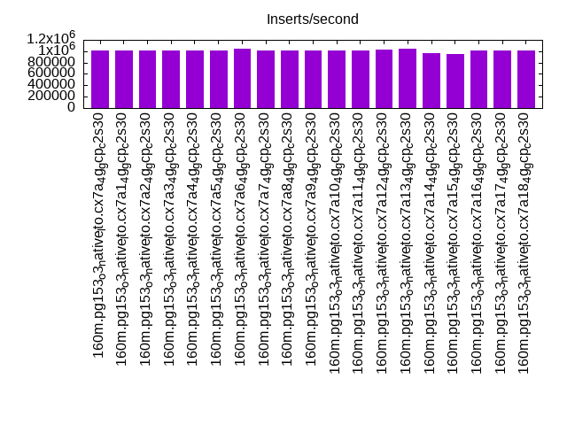
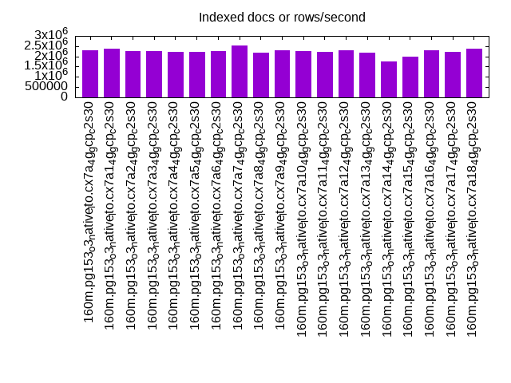
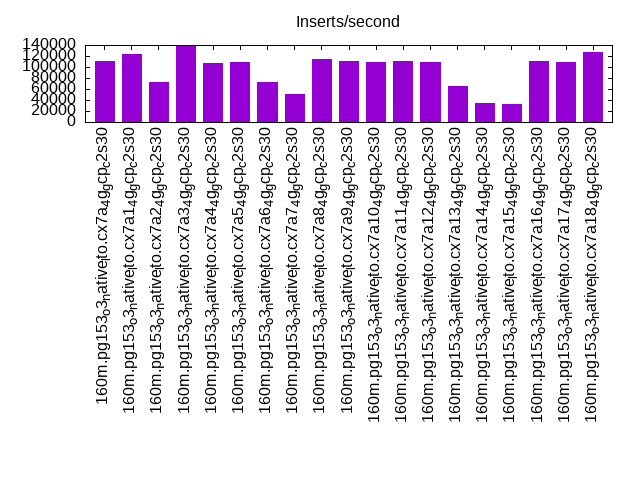
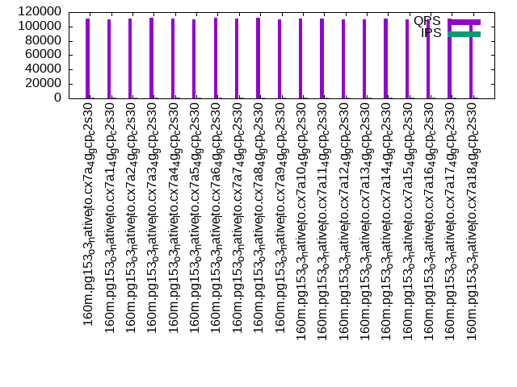
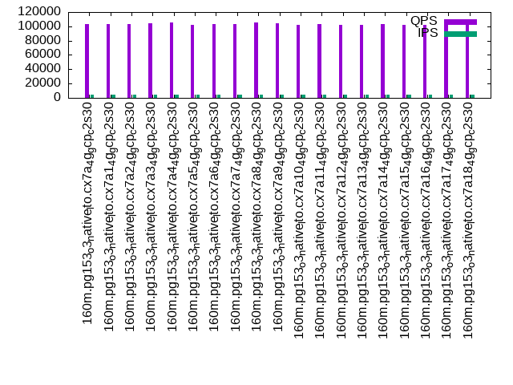
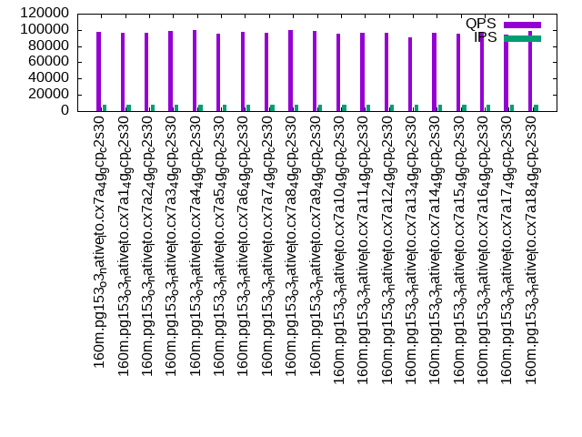

This is a report for the insert benchmark with 160M docs and 8 client(s). It is generated by scripts (bash, awk, sed) and Tufte might not be impressed. An overview of the insert benchmark is here and a short update is here. Below, by DBMS, I mean DBMS+version.config. An example is my8020.c10b40 where my means MySQL, 8020 is version 8.0.20 and c10b40 is the name for the configuration file.
The test server is a c2-standard-30 on GCP with 15 cores, hyperthreads disabled, 120G of RAM and XFS with SW RAID 0 on 4 NVMe devices (1.5T total). The benchmark was run with 8 clients and there were 1 or 3 connections per client (1 for queries or inserts without rate limits, 1+1 for rate limited inserts+deletes). It uses 8 tables, 1 per client. It loads 20M rows per table without secondary indexes, creates secondary indexes, then inserts 100M rows per table with a delete per insert to avoid growing the table. It then does 3 read+write tests for 3600s each that do queries as fast as possible with 100, 500 and then 1000 inserts/second/client concurrent with the queries and 1000 deletes/second to avoid growing the table. The database is cached by the OS page cache but not by the storage engine. Clients and the DBMS share one server. The per-database configs are in the per-database subdirectories here.
The tested DBMS are:
The numbers are inserts/s for l.i0 and l.i1, indexed docs (or rows) /s for l.x and queries/s for q*.2. The values are the average rate over the entire test for inserts (IPS) and queries (QPS). The range of values for IPS and QPS is split into 3 parts: bottom 25%, middle 50%, top 25%. Values in the bottom 25% have a red background, values in the top 25% have a green background and values in the middle have no color. A gray background is used for values that can be ignored because the DBMS did not sustain the target insert rate. Red backgrounds are not used when the minimum value is within 80% of the max value.
| dbms | l.i0 | l.x | l.i1 | q100.1 | q500.1 | q1000.1 |
|---|---|---|---|---|---|---|
| 160m.pg153_o3_native_lto.cx7a_4g_gcp_c2s30 | 1012658 | 2287143 | 110299 | 110829 | 103002 | 97615 |
| 160m.pg153_o3_native_lto.cx7a1_4g_gcp_c2s30 | 1012658 | 2389552 | 122963 | 109934 | 103023 | 95932 |
| 160m.pg153_o3_native_lto.cx7a2_4g_gcp_c2s30 | 1012658 | 2254930 | 71988 | 111294 | 103415 | 96796 |
| 160m.pg153_o3_native_lto.cx7a3_4g_gcp_c2s30 | 1012658 | 2254930 | 137836 | 111847 | 104844 | 98416 |
| 160m.pg153_o3_native_lto.cx7a4_4g_gcp_c2s30 | 1019108 | 2223611 | 108108 | 110740 | 105223 | 99320 |
| 160m.pg153_o3_native_lto.cx7a5_4g_gcp_c2s30 | 1006289 | 2223611 | 108430 | 109897 | 101793 | 95541 |
| 160m.pg153_o3_native_lto.cx7a6_4g_gcp_c2s30 | 1045752 | 2254930 | 72196 | 112537 | 103623 | 97889 |
| 160m.pg153_o3_native_lto.cx7a7_4g_gcp_c2s30 | 1019108 | 2541270 | 51059 | 110480 | 103268 | 95972 |
| 160m.pg153_o3_native_lto.cx7a8_4g_gcp_c2s30 | 1006289 | 2163514 | 113652 | 112080 | 105436 | 100042 |
| 160m.pg153_o3_native_lto.cx7a9_4g_gcp_c2s30 | 1019108 | 2287143 | 110834 | 110358 | 104486 | 99165 |
| 160m.pg153_o3_native_lto.cx7a10_4g_gcp_c2s30 | 1012658 | 2254930 | 109290 | 110586 | 102105 | 95529 |
| 160m.pg153_o3_native_lto.cx7a11_4g_gcp_c2s30 | 1019108 | 2223611 | 111281 | 110595 | 102660 | 96835 |
| 160m.pg153_o3_native_lto.cx7a12_4g_gcp_c2s30 | 1032258 | 2287143 | 109529 | 109879 | 102398 | 96427 |
| 160m.pg153_o3_native_lto.cx7a13_4g_gcp_c2s30 | 1038961 | 2193151 | 65590 | 109928 | 101880 | 91058 |
| 160m.pg153_o3_native_lto.cx7a14_4g_gcp_c2s30 | 969697 | 1759341 | 35450 | 110799 | 103090 | 96807 |
| 160m.pg153_o3_native_lto.cx7a15_4g_gcp_c2s30 | 946746 | 2001250 | 32755 | 109543 | 102198 | 94806 |
| 160m.pg153_o3_native_lto.cx7a16_4g_gcp_c2s30 | 1012658 | 2287143 | 110345 | 110110 | 101714 | 97278 |
| 160m.pg153_o3_native_lto.cx7a17_4g_gcp_c2s30 | 1006289 | 2223611 | 108725 | 110578 | 102479 | 94598 |
| 160m.pg153_o3_native_lto.cx7a18_4g_gcp_c2s30 | 1012658 | 2389552 | 127105 | 110277 | 103933 | 98473 |
This table has relative throughput, throughput for the DBMS relative to the DBMS in the first line, using the absolute throughput from the previous table.
| dbms | l.i0 | l.x | l.i1 | q100.1 | q500.1 | q1000.1 |
|---|---|---|---|---|---|---|
| 160m.pg153_o3_native_lto.cx7a_4g_gcp_c2s30 | 1.00 | 1.00 | 1.00 | 1.00 | 1.00 | 1.00 |
| 160m.pg153_o3_native_lto.cx7a1_4g_gcp_c2s30 | 1.00 | 1.04 | 1.11 | 0.99 | 1.00 | 0.98 |
| 160m.pg153_o3_native_lto.cx7a2_4g_gcp_c2s30 | 1.00 | 0.99 | 0.65 | 1.00 | 1.00 | 0.99 |
| 160m.pg153_o3_native_lto.cx7a3_4g_gcp_c2s30 | 1.00 | 0.99 | 1.25 | 1.01 | 1.02 | 1.01 |
| 160m.pg153_o3_native_lto.cx7a4_4g_gcp_c2s30 | 1.01 | 0.97 | 0.98 | 1.00 | 1.02 | 1.02 |
| 160m.pg153_o3_native_lto.cx7a5_4g_gcp_c2s30 | 0.99 | 0.97 | 0.98 | 0.99 | 0.99 | 0.98 |
| 160m.pg153_o3_native_lto.cx7a6_4g_gcp_c2s30 | 1.03 | 0.99 | 0.65 | 1.02 | 1.01 | 1.00 |
| 160m.pg153_o3_native_lto.cx7a7_4g_gcp_c2s30 | 1.01 | 1.11 | 0.46 | 1.00 | 1.00 | 0.98 |
| 160m.pg153_o3_native_lto.cx7a8_4g_gcp_c2s30 | 0.99 | 0.95 | 1.03 | 1.01 | 1.02 | 1.02 |
| 160m.pg153_o3_native_lto.cx7a9_4g_gcp_c2s30 | 1.01 | 1.00 | 1.00 | 1.00 | 1.01 | 1.02 |
| 160m.pg153_o3_native_lto.cx7a10_4g_gcp_c2s30 | 1.00 | 0.99 | 0.99 | 1.00 | 0.99 | 0.98 |
| 160m.pg153_o3_native_lto.cx7a11_4g_gcp_c2s30 | 1.01 | 0.97 | 1.01 | 1.00 | 1.00 | 0.99 |
| 160m.pg153_o3_native_lto.cx7a12_4g_gcp_c2s30 | 1.02 | 1.00 | 0.99 | 0.99 | 0.99 | 0.99 |
| 160m.pg153_o3_native_lto.cx7a13_4g_gcp_c2s30 | 1.03 | 0.96 | 0.59 | 0.99 | 0.99 | 0.93 |
| 160m.pg153_o3_native_lto.cx7a14_4g_gcp_c2s30 | 0.96 | 0.77 | 0.32 | 1.00 | 1.00 | 0.99 |
| 160m.pg153_o3_native_lto.cx7a15_4g_gcp_c2s30 | 0.93 | 0.87 | 0.30 | 0.99 | 0.99 | 0.97 |
| 160m.pg153_o3_native_lto.cx7a16_4g_gcp_c2s30 | 1.00 | 1.00 | 1.00 | 0.99 | 0.99 | 1.00 |
| 160m.pg153_o3_native_lto.cx7a17_4g_gcp_c2s30 | 0.99 | 0.97 | 0.99 | 1.00 | 0.99 | 0.97 |
| 160m.pg153_o3_native_lto.cx7a18_4g_gcp_c2s30 | 1.00 | 1.04 | 1.15 | 1.00 | 1.01 | 1.01 |
This lists the average rate of inserts/s for the tests that do inserts concurrent with queries. For such tests the query rate is listed in the table above. The read+write tests are setup so that the insert rate should match the target rate every second. Cells that are not at least 95% of the target have a red background to indicate a failure to satisfy the target.
| dbms | q100.1 | q500.1 | q1000.1 |
|---|---|---|---|
| pg153_o3_native_lto.cx7a_4g_gcp_c2s30 | 797 | 3987 | 7978 |
| pg153_o3_native_lto.cx7a1_4g_gcp_c2s30 | 797 | 3987 | 7976 |
| pg153_o3_native_lto.cx7a2_4g_gcp_c2s30 | 797 | 3987 | 7973 |
| pg153_o3_native_lto.cx7a3_4g_gcp_c2s30 | 798 | 3987 | 7976 |
| pg153_o3_native_lto.cx7a4_4g_gcp_c2s30 | 798 | 3987 | 7976 |
| pg153_o3_native_lto.cx7a5_4g_gcp_c2s30 | 797 | 3987 | 7976 |
| pg153_o3_native_lto.cx7a6_4g_gcp_c2s30 | 797 | 3988 | 7976 |
| pg153_o3_native_lto.cx7a7_4g_gcp_c2s30 | 797 | 3987 | 7978 |
| pg153_o3_native_lto.cx7a8_4g_gcp_c2s30 | 797 | 3987 | 7976 |
| pg153_o3_native_lto.cx7a9_4g_gcp_c2s30 | 797 | 3987 | 7976 |
| pg153_o3_native_lto.cx7a10_4g_gcp_c2s30 | 797 | 3987 | 7976 |
| pg153_o3_native_lto.cx7a11_4g_gcp_c2s30 | 797 | 3988 | 7976 |
| pg153_o3_native_lto.cx7a12_4g_gcp_c2s30 | 797 | 3988 | 7976 |
| pg153_o3_native_lto.cx7a13_4g_gcp_c2s30 | 797 | 3987 | 7971 |
| pg153_o3_native_lto.cx7a14_4g_gcp_c2s30 | 798 | 3988 | 7976 |
| pg153_o3_native_lto.cx7a15_4g_gcp_c2s30 | 797 | 3987 | 7973 |
| pg153_o3_native_lto.cx7a16_4g_gcp_c2s30 | 797 | 3987 | 7976 |
| pg153_o3_native_lto.cx7a17_4g_gcp_c2s30 | 797 | 3987 | 7976 |
| pg153_o3_native_lto.cx7a18_4g_gcp_c2s30 | 797 | 3987 | 7973 |
| target | 800 | 4000 | 8000 |
l.i0: load without secondary indexes. Graphs for performance per 1-second interval are here.
Average throughput:
Insert response time histogram: each cell has the percentage of responses that take <= the time in the header and max is the max response time in seconds. For the max column values in the top 25% of the range have a red background and in the bottom 25% of the range have a green background. The red background is not used when the min value is within 80% of the max value.
| dbms | 256us | 1ms | 4ms | 16ms | 64ms | 256ms | 1s | 4s | 16s | gt | max |
|---|---|---|---|---|---|---|---|---|---|---|---|
| pg153_o3_native_lto.cx7a_4g_gcp_c2s30 | 97.709 | 2.219 | 0.049 | 0.006 | 0.015 | 0.002 | 0.748 | ||||
| pg153_o3_native_lto.cx7a1_4g_gcp_c2s30 | 97.956 | 1.973 | 0.049 | 0.009 | 0.009 | 0.004 | 0.565 | ||||
| pg153_o3_native_lto.cx7a2_4g_gcp_c2s30 | 97.874 | 2.054 | 0.046 | 0.009 | 0.013 | 0.003 | 0.387 | ||||
| pg153_o3_native_lto.cx7a3_4g_gcp_c2s30 | 98.162 | 1.766 | 0.049 | 0.004 | 0.016 | 0.003 | 0.434 | ||||
| pg153_o3_native_lto.cx7a4_4g_gcp_c2s30 | 97.951 | 1.975 | 0.048 | 0.009 | 0.015 | 0.002 | 0.389 | ||||
| pg153_o3_native_lto.cx7a5_4g_gcp_c2s30 | 98.012 | 1.913 | 0.047 | 0.010 | 0.015 | 0.002 | 0.644 | ||||
| pg153_o3_native_lto.cx7a6_4g_gcp_c2s30 | 98.145 | 1.827 | 0.018 | 0.007 | 0.003 | 0.001 | 0.339 | ||||
| pg153_o3_native_lto.cx7a7_4g_gcp_c2s30 | 98.010 | 1.920 | 0.049 | 0.009 | 0.011 | 0.001 | 0.307 | ||||
| pg153_o3_native_lto.cx7a8_4g_gcp_c2s30 | 97.721 | 2.209 | 0.043 | 0.012 | 0.012 | 0.003 | 0.379 | ||||
| pg153_o3_native_lto.cx7a9_4g_gcp_c2s30 | 98.130 | 1.789 | 0.052 | 0.008 | 0.019 | 0.001 | 0.357 | ||||
| pg153_o3_native_lto.cx7a10_4g_gcp_c2s30 | 98.021 | 1.905 | 0.050 | 0.007 | 0.015 | 0.002 | 0.557 | ||||
| pg153_o3_native_lto.cx7a11_4g_gcp_c2s30 | 98.016 | 1.912 | 0.048 | 0.008 | 0.015 | 0.001 | 0.624 | ||||
| pg153_o3_native_lto.cx7a12_4g_gcp_c2s30 | 98.192 | 1.740 | 0.053 | 0.006 | 0.008 | 0.001 | 0.351 | ||||
| pg153_o3_native_lto.cx7a13_4g_gcp_c2s30 | 98.414 | 1.552 | 0.022 | 0.007 | 0.003 | 0.002 | 0.772 | ||||
| pg153_o3_native_lto.cx7a14_4g_gcp_c2s30 | 98.144 | 1.783 | 0.043 | 0.006 | 0.010 | 0.014 | 0.874 | ||||
| pg153_o3_native_lto.cx7a15_4g_gcp_c2s30 | 97.688 | 2.138 | 0.080 | 0.070 | 0.013 | 0.011 | 0.001 | 1.386 | |||
| pg153_o3_native_lto.cx7a16_4g_gcp_c2s30 | 97.974 | 1.954 | 0.049 | 0.007 | 0.015 | 0.002 | 0.499 | ||||
| pg153_o3_native_lto.cx7a17_4g_gcp_c2s30 | 98.008 | 1.896 | 0.055 | 0.018 | 0.022 | 0.243 | |||||
| pg153_o3_native_lto.cx7a18_4g_gcp_c2s30 | 97.855 | 2.074 | 0.050 | 0.005 | 0.013 | 0.003 | 0.474 |
Performance metrics for the DBMS listed above. Some are normalized by throughput, others are not. Legend for results is here.
ips qps rps rmbps wps wmbps rpq rkbpq wpi wkbpi csps cpups cspq cpupq dbgb1 dbgb2 rss maxop p50 p99 tag 1012658 0 0 0.0 4987.3 410.3 0.000 0.000 0.005 0.415 84219 75.3 0.083 11 15.3 41.4 0.0 0.748 146738 42669 160m.pg153_o3_native_lto.cx7a_4g_gcp_c2s30 1012658 0 0 0.0 4927.1 406.0 0.000 0.000 0.005 0.411 84498 75.5 0.083 11 15.3 41.4 0.0 0.565 146440 33663 160m.pg153_o3_native_lto.cx7a1_4g_gcp_c2s30 1012658 0 0 0.0 5073.9 406.6 0.000 0.000 0.005 0.411 83933 75.5 0.083 11 15.3 41.4 0.0 0.387 147538 31077 160m.pg153_o3_native_lto.cx7a2_4g_gcp_c2s30 1012658 0 0 0.0 5052.4 406.0 0.000 0.000 0.005 0.411 83777 75.8 0.083 11 15.3 41.4 0.0 0.434 147740 22887 160m.pg153_o3_native_lto.cx7a3_4g_gcp_c2s30 1019108 0 0 0.0 5099.3 406.2 0.000 0.000 0.005 0.408 83934 75.6 0.082 11 15.3 41.4 0.0 0.389 147039 34162 160m.pg153_o3_native_lto.cx7a4_4g_gcp_c2s30 1006289 0 0 0.0 5094.8 403.3 0.000 0.000 0.005 0.410 83353 76.0 0.083 11 15.3 41.4 0.0 0.644 146297 28968 160m.pg153_o3_native_lto.cx7a5_4g_gcp_c2s30 1045752 0 0 0.0 5033.5 418.2 0.000 0.000 0.005 0.410 89790 77.7 0.086 11 15.3 41.6 0.0 0.339 147040 72321 160m.pg153_o3_native_lto.cx7a6_4g_gcp_c2s30 1019108 0 0 0.0 3516.7 336.9 0.000 0.000 0.003 0.338 86409 76.4 0.085 11 15.3 31.4 0.0 0.307 145042 36360 160m.pg153_o3_native_lto.cx7a7_4g_gcp_c2s30 1006289 0 0 0.0 3680.3 376.9 0.000 0.000 0.004 0.384 84315 75.6 0.084 11 15.3 41.4 0.0 0.379 146242 13286 160m.pg153_o3_native_lto.cx7a8_4g_gcp_c2s30 1019108 0 0 0.0 5084.8 407.8 0.000 0.000 0.005 0.410 84696 75.9 0.083 11 15.3 41.4 0.0 0.357 146939 11687 160m.pg153_o3_native_lto.cx7a9_4g_gcp_c2s30 1012658 0 0 0.0 5009.0 406.1 0.000 0.000 0.005 0.411 83655 76.2 0.083 11 15.3 41.4 0.0 0.557 146841 15283 160m.pg153_o3_native_lto.cx7a10_4g_gcp_c2s30 1019108 0 0 0.0 4627.1 404.7 0.000 0.000 0.005 0.407 84386 75.8 0.083 11 15.3 41.4 NA 0.624 147193 23574 160m.pg153_o3_native_lto.cx7a11_4g_gcp_c2s30 1032258 0 0 0.0 5083.0 421.6 0.000 0.000 0.005 0.418 85309 77.4 0.083 11 15.3 41.4 NA 0.351 148739 26771 160m.pg153_o3_native_lto.cx7a12_4g_gcp_c2s30 1038961 0 0 0.0 5028.4 415.2 0.000 0.000 0.005 0.409 88826 77.7 0.085 11 15.3 41.6 0.0 0.772 147538 30778 160m.pg153_o3_native_lto.cx7a13_4g_gcp_c2s30 969697 0 0 0.0 4527.3 388.0 0.000 0.000 0.005 0.410 77119 70.9 0.080 11 15.3 41.4 0.0 0.874 149036 10588 160m.pg153_o3_native_lto.cx7a14_4g_gcp_c2s30 946746 0 0 0.0 4136.7 395.9 0.000 0.000 0.004 0.428 76310 70.4 0.081 11 15.3 42.9 0.0 1.386 148538 4295 160m.pg153_o3_native_lto.cx7a15_4g_gcp_c2s30 1012658 0 0 0.0 5148.3 407.4 0.000 0.000 0.005 0.412 84233 75.5 0.083 11 15.3 41.4 0.0 0.499 147039 35461 160m.pg153_o3_native_lto.cx7a16_4g_gcp_c2s30 1006289 0 0 0.0 4513.9 397.2 0.000 0.000 0.004 0.404 85387 75.2 0.085 11 15.3 41.4 0.0 0.243 146941 32764 160m.pg153_o3_native_lto.cx7a17_4g_gcp_c2s30 1012658 0 0 0.0 5116.9 410.0 0.000 0.000 0.005 0.415 83565 76.0 0.083 11 15.3 41.4 0.0 0.474 146395 40571 160m.pg153_o3_native_lto.cx7a18_4g_gcp_c2s30
l.x: create secondary indexes.
Average throughput:
Performance metrics for the DBMS listed above. Some are normalized by throughput, others are not. Legend for results is here.
ips qps rps rmbps wps wmbps rpq rkbpq wpi wkbpi csps cpups cspq cpupq dbgb1 dbgb2 rss maxop p50 p99 tag 2287143 0 0 0.0 1548.0 577.2 0.000 0.000 0.001 0.258 15066 37.3 0.007 2 29.4 68.3 0.0 0.001 NA NA 160m.pg153_o3_native_lto.cx7a_4g_gcp_c2s30 2389552 0 0 0.0 1274.7 444.0 0.000 0.000 0.001 0.190 8504 41.2 0.004 3 29.4 63.3 0.0 0.001 NA NA 160m.pg153_o3_native_lto.cx7a1_4g_gcp_c2s30 2254930 0 0 0.0 1571.6 562.1 0.000 0.000 0.001 0.255 14541 37.9 0.006 3 29.4 68.3 0.0 0.001 NA NA 160m.pg153_o3_native_lto.cx7a2_4g_gcp_c2s30 2254930 0 0 0.0 1509.2 564.2 0.000 0.000 0.001 0.256 15285 38.1 0.007 3 29.4 68.3 0.0 0.001 NA NA 160m.pg153_o3_native_lto.cx7a3_4g_gcp_c2s30 2223611 0 0 0.0 1565.7 559.9 0.000 0.000 0.001 0.258 15825 38.3 0.007 3 29.4 68.3 0.0 0.001 NA NA 160m.pg153_o3_native_lto.cx7a4_4g_gcp_c2s30 2223611 0 0 0.0 1562.3 561.2 0.000 0.000 0.001 0.258 14893 38.3 0.007 3 29.4 68.3 0.0 0.001 NA NA 160m.pg153_o3_native_lto.cx7a5_4g_gcp_c2s30 2254930 0 0 0.0 1462.6 545.9 0.000 0.000 0.001 0.248 9033 37.6 0.004 3 29.4 68.5 0.0 0.001 NA NA 160m.pg153_o3_native_lto.cx7a6_4g_gcp_c2s30 2541270 0 0 0.0 1322.1 435.6 0.000 0.000 0.001 0.176 15640 43.5 0.006 3 29.4 45.5 0.0 0.001 NA NA 160m.pg153_o3_native_lto.cx7a7_4g_gcp_c2s30 2163514 0 0 0.0 3068.7 587.7 0.000 0.000 0.001 0.278 14423 39.4 0.007 3 29.4 67.8 0.0 0.001 NA NA 160m.pg153_o3_native_lto.cx7a8_4g_gcp_c2s30 2287143 0 0 0.0 1590.1 581.7 0.000 0.000 0.001 0.260 15596 38.1 0.007 2 29.4 68.3 0.0 0.001 NA NA 160m.pg153_o3_native_lto.cx7a9_4g_gcp_c2s30 2254930 0 0 0.0 1572.4 578.5 0.000 0.000 0.001 0.263 15629 37.9 0.007 3 29.4 68.3 0.0 0.001 NA NA 160m.pg153_o3_native_lto.cx7a10_4g_gcp_c2s30 2223611 0 0 0.0 1507.1 558.2 0.000 0.000 0.001 0.257 15721 38.1 0.007 3 29.4 68.3 0.0 0.001 NA NA 160m.pg153_o3_native_lto.cx7a11_4g_gcp_c2s30 2287143 0 0 0.0 1533.1 574.1 0.000 0.000 0.001 0.257 14268 38.1 0.006 2 29.4 68.3 0.0 0.001 NA NA 160m.pg153_o3_native_lto.cx7a12_4g_gcp_c2s30 2193151 0 0 0.0 1438.9 540.7 0.000 0.000 0.001 0.252 13020 37.8 0.006 3 29.4 68.5 0.0 0.001 NA NA 160m.pg153_o3_native_lto.cx7a13_4g_gcp_c2s30 1759341 0 0 0.0 1214.4 454.6 0.000 0.000 0.001 0.265 12549 29.9 0.007 3 29.4 68.3 0.0 0.001 NA NA 160m.pg153_o3_native_lto.cx7a14_4g_gcp_c2s30 2001250 0 0 0.0 1237.0 414.5 0.000 0.000 0.001 0.212 14863 33.2 0.007 2 29.4 61.5 0.0 0.001 NA NA 160m.pg153_o3_native_lto.cx7a15_4g_gcp_c2s30 2287143 0 0 0.0 1607.2 579.2 0.000 0.000 0.001 0.259 15297 37.9 0.007 2 29.4 68.3 0.0 0.001 NA NA 160m.pg153_o3_native_lto.cx7a16_4g_gcp_c2s30 2223611 0 0 0.0 1608.9 562.7 0.000 0.000 0.001 0.259 15835 37.7 0.007 3 29.4 68.3 0.0 0.001 NA NA 160m.pg153_o3_native_lto.cx7a17_4g_gcp_c2s30 2389552 0 0 0.0 1277.0 431.3 0.000 0.000 0.001 0.185 7584 40.6 0.003 3 29.4 63.3 0.0 0.001 NA NA 160m.pg153_o3_native_lto.cx7a18_4g_gcp_c2s30
l.i1: continue load after secondary indexes created. Graphs for performance per 1-second interval are here.
Average throughput:
Insert response time histogram: each cell has the percentage of responses that take <= the time in the header and max is the max response time in seconds. For the max column values in the top 25% of the range have a red background and in the bottom 25% of the range have a green background. The red background is not used when the min value is within 80% of the max value.
| dbms | 256us | 1ms | 4ms | 16ms | 64ms | 256ms | 1s | 4s | 16s | gt | max |
|---|---|---|---|---|---|---|---|---|---|---|---|
| pg153_o3_native_lto.cx7a_4g_gcp_c2s30 | 92.711 | 5.267 | 1.921 | 0.101 | nonzero | 0.294 | |||||
| pg153_o3_native_lto.cx7a1_4g_gcp_c2s30 | 0.043 | 95.383 | 3.732 | 0.795 | 0.047 | nonzero | 0.297 | ||||
| pg153_o3_native_lto.cx7a2_4g_gcp_c2s30 | 0.070 | 88.127 | 7.180 | 4.623 | nonzero | 0.097 | |||||
| pg153_o3_native_lto.cx7a3_4g_gcp_c2s30 | nonzero | 98.488 | 1.316 | 0.183 | 0.013 | nonzero | 0.424 | ||||
| pg153_o3_native_lto.cx7a4_4g_gcp_c2s30 | 92.138 | 5.703 | 2.051 | 0.108 | nonzero | 0.297 | |||||
| pg153_o3_native_lto.cx7a5_4g_gcp_c2s30 | 0.030 | 93.182 | 5.036 | 1.664 | 0.088 | nonzero | 0.347 | ||||
| pg153_o3_native_lto.cx7a6_4g_gcp_c2s30 | 0.047 | 87.478 | 8.250 | 4.186 | 0.037 | 0.001 | nonzero | 5.172 | |||
| pg153_o3_native_lto.cx7a7_4g_gcp_c2s30 | nonzero | 79.810 | 11.244 | 7.036 | 1.910 | nonzero | 0.298 | ||||
| pg153_o3_native_lto.cx7a8_4g_gcp_c2s30 | 0.005 | 93.087 | 4.786 | 2.011 | 0.110 | nonzero | 0.320 | ||||
| pg153_o3_native_lto.cx7a9_4g_gcp_c2s30 | 93.632 | 4.511 | 1.762 | 0.095 | nonzero | 0.305 | |||||
| pg153_o3_native_lto.cx7a10_4g_gcp_c2s30 | 0.001 | 93.938 | 4.524 | 1.456 | 0.081 | nonzero | 0.288 | ||||
| pg153_o3_native_lto.cx7a11_4g_gcp_c2s30 | 0.001 | 94.193 | 4.099 | 1.619 | 0.088 | nonzero | 0.462 | ||||
| pg153_o3_native_lto.cx7a12_4g_gcp_c2s30 | 94.529 | 4.166 | 0.944 | 0.355 | 0.005 | 0.649 | |||||
| pg153_o3_native_lto.cx7a13_4g_gcp_c2s30 | 91.766 | 3.302 | 3.955 | 0.876 | 0.080 | 0.020 | 3.943 | ||||
| pg153_o3_native_lto.cx7a14_4g_gcp_c2s30 | 0.004 | 68.697 | 5.607 | 25.466 | 0.226 | nonzero | 2.445 | ||||
| pg153_o3_native_lto.cx7a15_4g_gcp_c2s30 | 81.139 | 4.058 | 9.221 | 5.541 | 0.040 | nonzero | 14.734 | ||||
| pg153_o3_native_lto.cx7a16_4g_gcp_c2s30 | nonzero | 93.217 | 4.782 | 1.898 | 0.102 | nonzero | 0.317 | ||||
| pg153_o3_native_lto.cx7a17_4g_gcp_c2s30 | 0.002 | 92.446 | 5.550 | 1.898 | 0.104 | nonzero | 0.314 | ||||
| pg153_o3_native_lto.cx7a18_4g_gcp_c2s30 | 0.339 | 96.907 | 2.142 | 0.576 | 0.036 | nonzero | nonzero | 1.984 |
Delete response time histogram: each cell has the percentage of responses that take <= the time in the header and max is the max response time in seconds. For the max column values in the top 25% of the range have a red background and in the bottom 25% of the range have a green background. The red background is not used when the min value is within 80% of the max value.
| dbms | 256us | 1ms | 4ms | 16ms | 64ms | 256ms | 1s | 4s | 16s | gt | max |
|---|---|---|---|---|---|---|---|---|---|---|---|
| pg153_o3_native_lto.cx7a_4g_gcp_c2s30 | 87.731 | 10.399 | 0.639 | 0.460 | 0.718 | 0.052 | nonzero | 0.305 | |||
| pg153_o3_native_lto.cx7a1_4g_gcp_c2s30 | 83.299 | 15.275 | 0.654 | 0.278 | 0.436 | 0.058 | nonzero | 0.364 | |||
| pg153_o3_native_lto.cx7a2_4g_gcp_c2s30 | 78.202 | 7.944 | 0.519 | 7.646 | 5.687 | 0.002 | nonzero | 0.501 | |||
| pg153_o3_native_lto.cx7a3_4g_gcp_c2s30 | 90.053 | 8.638 | 0.544 | 0.249 | 0.402 | 0.113 | nonzero | 0.422 | |||
| pg153_o3_native_lto.cx7a4_4g_gcp_c2s30 | 84.600 | 13.303 | 0.662 | 0.652 | 0.708 | 0.075 | nonzero | 0.381 | |||
| pg153_o3_native_lto.cx7a5_4g_gcp_c2s30 | 86.615 | 11.464 | 0.702 | 0.393 | 0.724 | 0.102 | nonzero | 0.370 | |||
| pg153_o3_native_lto.cx7a6_4g_gcp_c2s30 | 78.598 | 7.956 | 0.413 | 7.850 | 5.163 | 0.020 | nonzero | 0.450 | |||
| pg153_o3_native_lto.cx7a7_4g_gcp_c2s30 | 72.524 | 18.003 | 1.278 | 2.967 | 4.364 | 0.863 | nonzero | 0.364 | |||
| pg153_o3_native_lto.cx7a8_4g_gcp_c2s30 | 83.865 | 13.898 | 0.724 | 0.768 | 0.671 | 0.073 | nonzero | 0.328 | |||
| pg153_o3_native_lto.cx7a9_4g_gcp_c2s30 | 85.801 | 12.065 | 0.664 | 0.607 | 0.780 | 0.083 | nonzero | 0.432 | |||
| pg153_o3_native_lto.cx7a10_4g_gcp_c2s30 | 88.114 | 9.765 | 0.587 | 0.581 | 0.766 | 0.186 | nonzero | 0.357 | |||
| pg153_o3_native_lto.cx7a11_4g_gcp_c2s30 | 88.681 | 9.217 | 0.621 | 0.622 | 0.748 | 0.112 | nonzero | 0.410 | |||
| pg153_o3_native_lto.cx7a12_4g_gcp_c2s30 | 85.827 | 12.638 | 0.549 | 0.442 | 0.450 | 0.093 | 0.002 | 0.599 | |||
| pg153_o3_native_lto.cx7a13_4g_gcp_c2s30 | 86.923 | 11.906 | 0.359 | 0.324 | 0.253 | 0.212 | 0.020 | 0.003 | 3.939 | ||
| pg153_o3_native_lto.cx7a14_4g_gcp_c2s30 | 77.621 | 16.356 | 0.427 | 2.590 | 2.924 | 0.083 | nonzero | nonzero | 1.042 | ||
| pg153_o3_native_lto.cx7a15_4g_gcp_c2s30 | 69.116 | 24.944 | 0.630 | 1.116 | 2.640 | 1.537 | 0.017 | nonzero | 14.743 | ||
| pg153_o3_native_lto.cx7a16_4g_gcp_c2s30 | 86.361 | 11.975 | 0.597 | 0.433 | 0.576 | 0.057 | nonzero | 0.313 | |||
| pg153_o3_native_lto.cx7a17_4g_gcp_c2s30 | 85.777 | 12.586 | 0.538 | 0.518 | 0.480 | 0.100 | nonzero | 0.304 | |||
| pg153_o3_native_lto.cx7a18_4g_gcp_c2s30 | 87.659 | 10.399 | 0.706 | 0.127 | 1.069 | 0.041 | nonzero | nonzero | 1.998 |
Performance metrics for the DBMS listed above. Some are normalized by throughput, others are not. Legend for results is here.
ips qps rps rmbps wps wmbps rpq rkbpq wpi wkbpi csps cpups cspq cpupq dbgb1 dbgb2 rss maxop p50 p99 tag 110299 0 1552 27.3 58532.9 1326.7 0.014 0.254 0.531 12.317 72270 51.3 0.655 70 137.1 207.2 NA 0.294 15635 1099 160m.pg153_o3_native_lto.cx7a_4g_gcp_c2s30 122963 0 1808 25.0 56404.5 1326.6 0.015 0.208 0.459 11.048 77575 57.8 0.631 71 131.0 201.1 NA 0.297 17331 1049 160m.pg153_o3_native_lto.cx7a1_4g_gcp_c2s30 71988 0 35 0.2 171201.9 1445.2 0.000 0.003 2.378 20.558 49204 53.9 0.684 112 49.7 107.9 NA 0.097 9693 2098 160m.pg153_o3_native_lto.cx7a2_4g_gcp_c2s30 137836 0 1050 13.8 53204.9 1315.5 0.008 0.103 0.386 9.773 85883 63.5 0.623 69 110.1 157.1 NA 0.424 19778 649 160m.pg153_o3_native_lto.cx7a3_4g_gcp_c2s30 108108 0 1634 29.2 59244.8 1320.2 0.015 0.276 0.548 12.505 70013 50.9 0.648 71 141.4 211.5 NA 0.297 14784 600 160m.pg153_o3_native_lto.cx7a4_4g_gcp_c2s30 108430 0 1837 31.4 58561.1 1316.7 0.017 0.297 0.540 12.434 70760 52.5 0.653 73 133.0 203.1 NA 0.347 15640 200 160m.pg153_o3_native_lto.cx7a5_4g_gcp_c2s30 72196 0 46 0.2 172007.3 1446.9 0.001 0.003 2.383 20.522 50094 53.9 0.694 112 50.0 108.5 NA 5.172 9693 2049 160m.pg153_o3_native_lto.cx7a6_4g_gcp_c2s30 51059 0 0 0.0 64239.1 1224.9 0.000 0.000 1.258 24.565 44639 31.2 0.874 92 57.1 73.1 NA 0.298 5244 699 160m.pg153_o3_native_lto.cx7a7_4g_gcp_c2s30 113652 0 1740 32.5 58914.1 1311.7 0.015 0.293 0.518 11.818 68791 50.7 0.605 67 145.1 215.2 NA 0.320 16688 1199 160m.pg153_o3_native_lto.cx7a8_4g_gcp_c2s30 110834 0 1616 28.1 57033.1 1310.4 0.015 0.260 0.515 12.107 72014 52.5 0.650 71 137.0 207.1 NA 0.305 15383 600 160m.pg153_o3_native_lto.cx7a9_4g_gcp_c2s30 109290 0 1833 35.0 56061.3 1300.1 0.017 0.328 0.513 12.181 70754 54.2 0.647 74 122.6 192.6 NA 0.288 15791 499 160m.pg153_o3_native_lto.cx7a10_4g_gcp_c2s30 111281 0 1858 32.6 55870.2 1304.6 0.017 0.300 0.502 12.005 72303 53.9 0.650 73 122.1 192.7 NA 0.462 15838 400 160m.pg153_o3_native_lto.cx7a11_4g_gcp_c2s30 109529 0 1479 28.2 56657.3 1311.5 0.014 0.264 0.517 12.262 72357 51.6 0.661 71 155.3 225.4 NA 0.649 14734 999 160m.pg153_o3_native_lto.cx7a12_4g_gcp_c2s30 65590 0 926 17.8 29156.7 730.9 0.014 0.278 0.445 11.410 42389 30.2 0.646 69 167.8 237.9 NA 3.943 7683 0 160m.pg153_o3_native_lto.cx7a13_4g_gcp_c2s30 35450 0 0 0.0 85556.9 742.6 0.000 0.000 2.413 21.451 24728 22.1 0.698 94 54.2 98.9 0.0 2.445 4745 1398 160m.pg153_o3_native_lto.cx7a14_4g_gcp_c2s30 32755 0 414 7.2 36868.0 671.8 0.013 0.224 1.126 21.002 25040 17.4 0.764 80 125.0 157.1 NA 14.734 3197 300 160m.pg153_o3_native_lto.cx7a15_4g_gcp_c2s30 110345 0 1644 30.5 57482.3 1319.8 0.015 0.283 0.521 12.247 71749 51.6 0.650 70 137.8 207.9 NA 0.317 15688 1449 160m.pg153_o3_native_lto.cx7a16_4g_gcp_c2s30 108725 0 1623 31.4 54530.5 1317.9 0.015 0.296 0.502 12.412 71235 51.5 0.655 71 131.5 201.6 NA 0.314 15383 1199 160m.pg153_o3_native_lto.cx7a17_4g_gcp_c2s30 127105 0 1444 15.1 54350.1 1307.7 0.011 0.121 0.428 10.535 81410 62.1 0.640 73 75.8 144.8 NA 1.984 18630 749 160m.pg153_o3_native_lto.cx7a18_4g_gcp_c2s30
q100.1: range queries with 100 insert/s per client. Graphs for performance per 1-second interval are here.
Average throughput:
Query response time histogram: each cell has the percentage of responses that take <= the time in the header and max is the max response time in seconds. For max values in the top 25% of the range have a red background and in the bottom 25% of the range have a green background. The red background is not used when the min value is within 80% of the max value.
| dbms | 256us | 1ms | 4ms | 16ms | 64ms | 256ms | 1s | 4s | 16s | gt | max |
|---|---|---|---|---|---|---|---|---|---|---|---|
| pg153_o3_native_lto.cx7a_4g_gcp_c2s30 | 99.952 | 0.046 | 0.001 | nonzero | nonzero | nonzero | 0.134 | ||||
| pg153_o3_native_lto.cx7a1_4g_gcp_c2s30 | 99.948 | 0.051 | 0.001 | nonzero | nonzero | nonzero | 0.094 | ||||
| pg153_o3_native_lto.cx7a2_4g_gcp_c2s30 | 99.995 | 0.004 | 0.001 | nonzero | 0.005 | ||||||
| pg153_o3_native_lto.cx7a3_4g_gcp_c2s30 | 99.989 | 0.010 | 0.001 | nonzero | nonzero | nonzero | 0.127 | ||||
| pg153_o3_native_lto.cx7a4_4g_gcp_c2s30 | 99.949 | 0.050 | 0.001 | nonzero | nonzero | nonzero | 0.145 | ||||
| pg153_o3_native_lto.cx7a5_4g_gcp_c2s30 | 99.951 | 0.048 | 0.001 | nonzero | nonzero | nonzero | nonzero | 0.273 | |||
| pg153_o3_native_lto.cx7a6_4g_gcp_c2s30 | 99.994 | 0.005 | 0.001 | nonzero | 0.007 | ||||||
| pg153_o3_native_lto.cx7a7_4g_gcp_c2s30 | 99.995 | 0.005 | 0.001 | nonzero | 0.004 | ||||||
| pg153_o3_native_lto.cx7a8_4g_gcp_c2s30 | 99.939 | 0.059 | 0.001 | nonzero | nonzero | nonzero | 0.182 | ||||
| pg153_o3_native_lto.cx7a9_4g_gcp_c2s30 | 99.950 | 0.048 | 0.001 | nonzero | nonzero | nonzero | 0.128 | ||||
| pg153_o3_native_lto.cx7a10_4g_gcp_c2s30 | 99.977 | 0.021 | 0.001 | nonzero | nonzero | nonzero | 0.123 | ||||
| pg153_o3_native_lto.cx7a11_4g_gcp_c2s30 | 99.981 | 0.018 | 0.001 | nonzero | nonzero | nonzero | 0.112 | ||||
| pg153_o3_native_lto.cx7a12_4g_gcp_c2s30 | 99.935 | 0.063 | 0.001 | nonzero | nonzero | nonzero | 0.132 | ||||
| pg153_o3_native_lto.cx7a13_4g_gcp_c2s30 | 99.949 | 0.050 | 0.001 | nonzero | nonzero | nonzero | nonzero | 0.308 | |||
| pg153_o3_native_lto.cx7a14_4g_gcp_c2s30 | 99.995 | 0.005 | 0.001 | 0.004 | |||||||
| pg153_o3_native_lto.cx7a15_4g_gcp_c2s30 | 99.949 | 0.050 | 0.001 | nonzero | nonzero | nonzero | 0.225 | ||||
| pg153_o3_native_lto.cx7a16_4g_gcp_c2s30 | 99.962 | 0.037 | 0.001 | nonzero | nonzero | nonzero | 0.120 | ||||
| pg153_o3_native_lto.cx7a17_4g_gcp_c2s30 | 99.966 | 0.033 | 0.001 | nonzero | nonzero | nonzero | 0.130 | ||||
| pg153_o3_native_lto.cx7a18_4g_gcp_c2s30 | 99.995 | 0.004 | 0.001 | nonzero | 0.009 |
Insert response time histogram: each cell has the percentage of responses that take <= the time in the header and max is the max response time in seconds. For max values in the top 25% of the range have a red background and in the bottom 25% of the range have a green background. The red background is not used when the min value is within 80% of the max value.
| dbms | 256us | 1ms | 4ms | 16ms | 64ms | 256ms | 1s | 4s | 16s | gt | max |
|---|---|---|---|---|---|---|---|---|---|---|---|
| pg153_o3_native_lto.cx7a_4g_gcp_c2s30 | 77.406 | 22.297 | 0.280 | 0.017 | 0.224 | ||||||
| pg153_o3_native_lto.cx7a1_4g_gcp_c2s30 | 79.354 | 20.194 | 0.431 | 0.021 | 0.150 | ||||||
| pg153_o3_native_lto.cx7a2_4g_gcp_c2s30 | 99.997 | 0.003 | 0.015 | ||||||||
| pg153_o3_native_lto.cx7a3_4g_gcp_c2s30 | 97.559 | 2.415 | 0.023 | 0.003 | 0.134 | ||||||
| pg153_o3_native_lto.cx7a4_4g_gcp_c2s30 | 77.488 | 22.139 | 0.366 | 0.007 | 0.122 | ||||||
| pg153_o3_native_lto.cx7a5_4g_gcp_c2s30 | 72.288 | 27.238 | 0.469 | 0.003 | 0.002 | 0.274 | |||||
| pg153_o3_native_lto.cx7a6_4g_gcp_c2s30 | 99.995 | 0.005 | 0.014 | ||||||||
| pg153_o3_native_lto.cx7a7_4g_gcp_c2s30 | 100.000 | 0.004 | |||||||||
| pg153_o3_native_lto.cx7a8_4g_gcp_c2s30 | 79.689 | 19.771 | 0.510 | 0.026 | 0.003 | 0.331 | |||||
| pg153_o3_native_lto.cx7a9_4g_gcp_c2s30 | 83.568 | 16.113 | 0.300 | 0.019 | 0.223 | ||||||
| pg153_o3_native_lto.cx7a10_4g_gcp_c2s30 | 87.748 | 12.149 | 0.087 | 0.016 | 0.168 | ||||||
| pg153_o3_native_lto.cx7a11_4g_gcp_c2s30 | 88.566 | 11.377 | 0.043 | 0.009 | 0.005 | 0.354 | |||||
| pg153_o3_native_lto.cx7a12_4g_gcp_c2s30 | 68.785 | 30.597 | 0.604 | 0.010 | 0.003 | 0.391 | |||||
| pg153_o3_native_lto.cx7a13_4g_gcp_c2s30 | 75.003 | 24.604 | 0.373 | 0.017 | 0.002 | 0.482 | |||||
| pg153_o3_native_lto.cx7a14_4g_gcp_c2s30 | 99.997 | 0.003 | 0.005 | ||||||||
| pg153_o3_native_lto.cx7a15_4g_gcp_c2s30 | 78.224 | 21.314 | 0.427 | 0.028 | 0.007 | 0.592 | |||||
| pg153_o3_native_lto.cx7a16_4g_gcp_c2s30 | 81.312 | 18.384 | 0.299 | 0.005 | 0.154 | ||||||
| pg153_o3_native_lto.cx7a17_4g_gcp_c2s30 | 85.474 | 14.382 | 0.120 | 0.021 | 0.003 | 0.302 | |||||
| pg153_o3_native_lto.cx7a18_4g_gcp_c2s30 | 99.542 | 0.457 | 0.002 | 0.017 |
Delete response time histogram: each cell has the percentage of responses that take <= the time in the header and max is the max response time in seconds. For max values in the top 25% of the range have a red background and in the bottom 25% of the range have a green background. The red background is not used when the min value is within 80% of the max value.
| dbms | 256us | 1ms | 4ms | 16ms | 64ms | 256ms | 1s | 4s | 16s | gt | max |
|---|---|---|---|---|---|---|---|---|---|---|---|
| pg153_o3_native_lto.cx7a_4g_gcp_c2s30 | 38.863 | 48.995 | 12.128 | 0.014 | 0.014 | ||||||
| pg153_o3_native_lto.cx7a1_4g_gcp_c2s30 | 33.681 | 53.700 | 12.615 | 0.003 | 0.002 | 0.022 | |||||
| pg153_o3_native_lto.cx7a2_4g_gcp_c2s30 | 66.323 | 26.970 | 3.698 | 3.009 | 0.010 | ||||||
| pg153_o3_native_lto.cx7a3_4g_gcp_c2s30 | 39.679 | 49.734 | 10.580 | 0.007 | 0.014 | ||||||
| pg153_o3_native_lto.cx7a4_4g_gcp_c2s30 | 38.163 | 49.712 | 12.118 | 0.007 | 0.015 | ||||||
| pg153_o3_native_lto.cx7a5_4g_gcp_c2s30 | 38.752 | 48.845 | 12.403 | 0.004 | |||||||
| pg153_o3_native_lto.cx7a6_4g_gcp_c2s30 | 66.602 | 29.630 | 3.767 | 0.004 | |||||||
| pg153_o3_native_lto.cx7a7_4g_gcp_c2s30 | 39.873 | 49.816 | 10.311 | 0.003 | |||||||
| pg153_o3_native_lto.cx7a8_4g_gcp_c2s30 | 36.856 | 49.271 | 13.865 | 0.009 | 0.014 | ||||||
| pg153_o3_native_lto.cx7a9_4g_gcp_c2s30 | 40.950 | 49.970 | 9.069 | 0.009 | 0.002 | 0.056 | |||||
| pg153_o3_native_lto.cx7a10_4g_gcp_c2s30 | 45.590 | 46.918 | 7.483 | 0.009 | 0.011 | ||||||
| pg153_o3_native_lto.cx7a11_4g_gcp_c2s30 | 44.240 | 45.957 | 9.800 | 0.003 | 0.005 | ||||||
| pg153_o3_native_lto.cx7a12_4g_gcp_c2s30 | 39.665 | 50.274 | 10.059 | 0.002 | 0.018 | ||||||
| pg153_o3_native_lto.cx7a13_4g_gcp_c2s30 | 38.880 | 51.068 | 10.052 | 0.004 | |||||||
| pg153_o3_native_lto.cx7a14_4g_gcp_c2s30 | 53.420 | 33.866 | 12.714 | 0.003 | |||||||
| pg153_o3_native_lto.cx7a15_4g_gcp_c2s30 | 40.043 | 48.917 | 11.038 | 0.002 | 0.045 | ||||||
| pg153_o3_native_lto.cx7a16_4g_gcp_c2s30 | 42.198 | 49.755 | 8.042 | 0.005 | 0.014 | ||||||
| pg153_o3_native_lto.cx7a17_4g_gcp_c2s30 | 38.719 | 50.962 | 10.312 | 0.005 | 0.002 | 0.068 | |||||
| pg153_o3_native_lto.cx7a18_4g_gcp_c2s30 | 40.161 | 50.156 | 9.667 | 0.016 | 0.006 |
Performance metrics for the DBMS listed above. Some are normalized by throughput, others are not. Legend for results is here.
ips qps rps rmbps wps wmbps rpq rkbpq wpi wkbpi csps cpups cspq cpupq dbgb1 dbgb2 rss maxop p50 p99 tag 797 110829 512 4.2 3382.8 36.9 0.005 0.039 4.243 47.347 423400 53.0 3.820 72 137.2 179.4 0.0 0.134 13953 13489 160m.pg153_o3_native_lto.cx7a_4g_gcp_c2s30 797 109934 474 4.1 3353.2 36.2 0.004 0.038 4.206 46.452 419974 53.0 3.820 72 131.0 180.2 0.0 0.094 13894 12195 160m.pg153_o3_native_lto.cx7a1_4g_gcp_c2s30 797 111294 0 0.0 3419.8 33.0 0.000 0.000 4.289 42.355 424784 52.8 3.817 71 49.6 73.9 0.0 0.005 13889 13655 160m.pg153_o3_native_lto.cx7a2_4g_gcp_c2s30 798 111847 84 0.6 3357.9 35.6 0.001 0.006 4.210 45.728 426110 53.0 3.810 71 109.7 149.2 0.0 0.127 13969 13713 160m.pg153_o3_native_lto.cx7a3_4g_gcp_c2s30 798 110740 568 4.5 3353.9 38.1 0.005 0.041 4.206 48.945 422340 53.1 3.814 72 141.5 211.5 0.0 0.145 13985 13761 160m.pg153_o3_native_lto.cx7a4_4g_gcp_c2s30 797 109897 515 4.4 3395.3 65.2 0.005 0.041 4.258 83.690 419927 52.9 3.821 72 133.0 177.0 0.0 0.273 13809 13457 160m.pg153_o3_native_lto.cx7a5_4g_gcp_c2s30 797 112537 0 0.0 3368.3 32.2 0.000 0.000 4.225 41.312 429441 52.9 3.816 71 50.0 74.5 0.0 0.007 14049 13841 160m.pg153_o3_native_lto.cx7a6_4g_gcp_c2s30 797 110480 0 0.0 3411.9 34.7 0.000 0.000 4.279 44.530 421773 52.7 3.818 72 57.0 68.7 0.0 0.004 13873 13649 160m.pg153_o3_native_lto.cx7a7_4g_gcp_c2s30 797 112080 472 4.3 3381.8 39.8 0.004 0.039 4.242 51.086 428263 52.8 3.821 71 145.1 187.3 0.0 0.182 14112 5626 160m.pg153_o3_native_lto.cx7a8_4g_gcp_c2s30 797 110358 465 4.0 3364.0 50.7 0.004 0.037 4.219 65.143 421275 53.0 3.817 72 137.0 200.1 0.0 0.128 13750 13505 160m.pg153_o3_native_lto.cx7a9_4g_gcp_c2s30 797 110586 280 2.1 3434.9 92.0 0.003 0.020 4.308 118.106 422246 53.0 3.818 72 119.9 163.5 0.0 0.123 13953 13191 160m.pg153_o3_native_lto.cx7a10_4g_gcp_c2s30 797 110595 226 1.4 3366.1 57.9 0.002 0.013 4.222 74.331 422273 53.1 3.818 72 118.5 162.1 0.0 0.112 13921 13655 160m.pg153_o3_native_lto.cx7a11_4g_gcp_c2s30 797 109879 653 5.9 3412.5 55.2 0.006 0.055 4.280 70.876 419988 53.0 3.822 72 155.3 200.3 0.0 0.132 13713 13457 160m.pg153_o3_native_lto.cx7a12_4g_gcp_c2s30 797 109928 744 5.9 3382.5 52.3 0.007 0.055 4.242 67.155 420129 53.0 3.822 72 167.8 211.8 0.0 0.308 13953 13217 160m.pg153_o3_native_lto.cx7a13_4g_gcp_c2s30 798 110799 0 0.0 3398.6 32.9 0.000 0.000 4.262 42.216 422859 52.9 3.816 72 54.2 74.1 0.0 0.004 13905 13665 160m.pg153_o3_native_lto.cx7a14_4g_gcp_c2s30 797 109543 448 4.7 3375.5 45.6 0.004 0.043 4.234 58.578 418638 52.9 3.822 72 116.8 133.2 0.0 0.225 13713 10085 160m.pg153_o3_native_lto.cx7a15_4g_gcp_c2s30 797 110110 355 3.5 3397.1 52.0 0.003 0.033 4.261 66.729 420635 53.0 3.820 72 137.8 181.7 0.0 0.120 13761 13521 160m.pg153_o3_native_lto.cx7a16_4g_gcp_c2s30 797 110578 550 2.8 3384.4 48.6 0.005 0.026 4.245 62.453 422304 53.1 3.819 72 131.6 175.3 0.0 0.130 13841 13617 160m.pg153_o3_native_lto.cx7a17_4g_gcp_c2s30 797 110277 4 0.0 3366.5 38.5 0.000 0.000 4.222 49.403 420876 53.0 3.817 72 75.1 120.4 0.0 0.009 13847 13617 160m.pg153_o3_native_lto.cx7a18_4g_gcp_c2s30
q500.1: range queries with 500 insert/s per client. Graphs for performance per 1-second interval are here.
Average throughput:
Query response time histogram: each cell has the percentage of responses that take <= the time in the header and max is the max response time in seconds. For max values in the top 25% of the range have a red background and in the bottom 25% of the range have a green background. The red background is not used when the min value is within 80% of the max value.
| dbms | 256us | 1ms | 4ms | 16ms | 64ms | 256ms | 1s | 4s | 16s | gt | max |
|---|---|---|---|---|---|---|---|---|---|---|---|
| pg153_o3_native_lto.cx7a_4g_gcp_c2s30 | 99.926 | 0.063 | 0.010 | 0.001 | nonzero | 0.025 | |||||
| pg153_o3_native_lto.cx7a1_4g_gcp_c2s30 | 99.949 | 0.043 | 0.008 | 0.001 | nonzero | 0.024 | |||||
| pg153_o3_native_lto.cx7a2_4g_gcp_c2s30 | 99.968 | 0.024 | 0.007 | nonzero | nonzero | 0.021 | |||||
| pg153_o3_native_lto.cx7a3_4g_gcp_c2s30 | 99.977 | 0.014 | 0.008 | 0.001 | nonzero | 0.023 | |||||
| pg153_o3_native_lto.cx7a4_4g_gcp_c2s30 | 99.960 | 0.032 | 0.007 | 0.001 | nonzero | 0.026 | |||||
| pg153_o3_native_lto.cx7a5_4g_gcp_c2s30 | 99.929 | 0.060 | 0.010 | 0.001 | nonzero | 0.024 | |||||
| pg153_o3_native_lto.cx7a6_4g_gcp_c2s30 | 99.966 | 0.025 | 0.008 | nonzero | nonzero | 0.023 | |||||
| pg153_o3_native_lto.cx7a7_4g_gcp_c2s30 | 99.957 | 0.032 | 0.010 | 0.002 | nonzero | 0.031 | |||||
| pg153_o3_native_lto.cx7a8_4g_gcp_c2s30 | 99.948 | 0.042 | 0.009 | 0.001 | nonzero | 0.036 | |||||
| pg153_o3_native_lto.cx7a9_4g_gcp_c2s30 | 99.940 | 0.051 | 0.009 | 0.001 | nonzero | 0.027 | |||||
| pg153_o3_native_lto.cx7a10_4g_gcp_c2s30 | 99.939 | 0.050 | 0.011 | 0.001 | nonzero | 0.035 | |||||
| pg153_o3_native_lto.cx7a11_4g_gcp_c2s30 | 99.943 | 0.046 | 0.010 | 0.001 | nonzero | 0.020 | |||||
| pg153_o3_native_lto.cx7a12_4g_gcp_c2s30 | 99.919 | 0.069 | 0.011 | 0.001 | nonzero | 0.029 | |||||
| pg153_o3_native_lto.cx7a13_4g_gcp_c2s30 | 99.902 | 0.087 | 0.011 | 0.001 | nonzero | 0.043 | |||||
| pg153_o3_native_lto.cx7a14_4g_gcp_c2s30 | 99.965 | 0.026 | 0.008 | 0.001 | nonzero | nonzero | 0.069 | ||||
| pg153_o3_native_lto.cx7a15_4g_gcp_c2s30 | 99.938 | 0.051 | 0.010 | 0.001 | nonzero | 0.037 | |||||
| pg153_o3_native_lto.cx7a16_4g_gcp_c2s30 | 99.924 | 0.066 | 0.010 | 0.001 | nonzero | nonzero | 0.094 | ||||
| pg153_o3_native_lto.cx7a17_4g_gcp_c2s30 | 99.924 | 0.065 | 0.010 | 0.001 | nonzero | 0.026 | |||||
| pg153_o3_native_lto.cx7a18_4g_gcp_c2s30 | 99.962 | 0.030 | 0.007 | nonzero | nonzero | nonzero | 0.078 |
Insert response time histogram: each cell has the percentage of responses that take <= the time in the header and max is the max response time in seconds. For max values in the top 25% of the range have a red background and in the bottom 25% of the range have a green background. The red background is not used when the min value is within 80% of the max value.
| dbms | 256us | 1ms | 4ms | 16ms | 64ms | 256ms | 1s | 4s | 16s | gt | max |
|---|---|---|---|---|---|---|---|---|---|---|---|
| pg153_o3_native_lto.cx7a_4g_gcp_c2s30 | 88.341 | 11.603 | 0.056 | 0.036 | |||||||
| pg153_o3_native_lto.cx7a1_4g_gcp_c2s30 | 90.953 | 9.001 | 0.045 | 0.030 | |||||||
| pg153_o3_native_lto.cx7a2_4g_gcp_c2s30 | 99.586 | 0.407 | 0.007 | 0.022 | |||||||
| pg153_o3_native_lto.cx7a3_4g_gcp_c2s30 | 98.592 | 1.383 | 0.025 | 0.028 | |||||||
| pg153_o3_native_lto.cx7a4_4g_gcp_c2s30 | 91.644 | 8.307 | 0.049 | 0.036 | |||||||
| pg153_o3_native_lto.cx7a5_4g_gcp_c2s30 | 91.957 | 7.960 | 0.084 | 0.034 | |||||||
| pg153_o3_native_lto.cx7a6_4g_gcp_c2s30 | 99.324 | 0.667 | 0.009 | 0.027 | |||||||
| pg153_o3_native_lto.cx7a7_4g_gcp_c2s30 | 97.504 | 2.301 | 0.195 | 0.046 | |||||||
| pg153_o3_native_lto.cx7a8_4g_gcp_c2s30 | 89.636 | 10.314 | 0.050 | 0.036 | |||||||
| pg153_o3_native_lto.cx7a9_4g_gcp_c2s30 | 90.428 | 9.505 | 0.068 | 0.039 | |||||||
| pg153_o3_native_lto.cx7a10_4g_gcp_c2s30 | 97.947 | 1.923 | 0.130 | 0.043 | |||||||
| pg153_o3_native_lto.cx7a11_4g_gcp_c2s30 | 97.886 | 2.085 | 0.029 | 0.026 | |||||||
| pg153_o3_native_lto.cx7a12_4g_gcp_c2s30 | 87.907 | 12.031 | 0.062 | 0.037 | |||||||
| pg153_o3_native_lto.cx7a13_4g_gcp_c2s30 | 84.730 | 14.790 | 0.480 | 0.001 | 0.067 | ||||||
| pg153_o3_native_lto.cx7a14_4g_gcp_c2s30 | 99.027 | 0.781 | 0.192 | nonzero | 0.069 | ||||||
| pg153_o3_native_lto.cx7a15_4g_gcp_c2s30 | 91.461 | 8.277 | 0.262 | 0.050 | |||||||
| pg153_o3_native_lto.cx7a16_4g_gcp_c2s30 | 94.205 | 5.717 | 0.065 | 0.013 | 0.103 | ||||||
| pg153_o3_native_lto.cx7a17_4g_gcp_c2s30 | 91.850 | 8.058 | 0.092 | 0.039 | |||||||
| pg153_o3_native_lto.cx7a18_4g_gcp_c2s30 | 98.326 | 1.644 | 0.027 | 0.002 | 0.092 |
Delete response time histogram: each cell has the percentage of responses that take <= the time in the header and max is the max response time in seconds. For max values in the top 25% of the range have a red background and in the bottom 25% of the range have a green background. The red background is not used when the min value is within 80% of the max value.
| dbms | 256us | 1ms | 4ms | 16ms | 64ms | 256ms | 1s | 4s | 16s | gt | max |
|---|---|---|---|---|---|---|---|---|---|---|---|
| pg153_o3_native_lto.cx7a_4g_gcp_c2s30 | 77.417 | 2.691 | 0.333 | 18.654 | 0.905 | 0.044 | |||||
| pg153_o3_native_lto.cx7a1_4g_gcp_c2s30 | 77.237 | 3.977 | 0.323 | 18.239 | 0.224 | 0.037 | |||||
| pg153_o3_native_lto.cx7a2_4g_gcp_c2s30 | 75.864 | 3.023 | 3.094 | 17.997 | 0.021 | 0.029 | |||||
| pg153_o3_native_lto.cx7a3_4g_gcp_c2s30 | 78.568 | 2.103 | 0.487 | 18.306 | 0.535 | 0.044 | |||||
| pg153_o3_native_lto.cx7a4_4g_gcp_c2s30 | 78.563 | 2.222 | 0.304 | 18.005 | 0.906 | 0.050 | |||||
| pg153_o3_native_lto.cx7a5_4g_gcp_c2s30 | 77.527 | 2.636 | 0.249 | 18.785 | 0.803 | 0.047 | |||||
| pg153_o3_native_lto.cx7a6_4g_gcp_c2s30 | 74.610 | 2.617 | 3.984 | 18.732 | 0.057 | 0.029 | |||||
| pg153_o3_native_lto.cx7a7_4g_gcp_c2s30 | 76.683 | 2.482 | 0.439 | 19.406 | 0.990 | 0.051 | |||||
| pg153_o3_native_lto.cx7a8_4g_gcp_c2s30 | 77.502 | 2.472 | 0.298 | 18.753 | 0.976 | 0.055 | |||||
| pg153_o3_native_lto.cx7a9_4g_gcp_c2s30 | 78.586 | 2.717 | 0.344 | 17.512 | 0.841 | 0.061 | |||||
| pg153_o3_native_lto.cx7a10_4g_gcp_c2s30 | 77.739 | 3.125 | 1.625 | 17.402 | 0.109 | 0.031 | |||||
| pg153_o3_native_lto.cx7a11_4g_gcp_c2s30 | 77.985 | 2.644 | 1.940 | 17.209 | 0.222 | 0.035 | |||||
| pg153_o3_native_lto.cx7a12_4g_gcp_c2s30 | 77.434 | 3.371 | 0.425 | 17.858 | 0.911 | 0.050 | |||||
| pg153_o3_native_lto.cx7a13_4g_gcp_c2s30 | 77.547 | 2.783 | 0.365 | 18.466 | 0.839 | 0.044 | |||||
| pg153_o3_native_lto.cx7a14_4g_gcp_c2s30 | 76.773 | 2.535 | 2.655 | 17.844 | 0.193 | nonzero | 0.074 | ||||
| pg153_o3_native_lto.cx7a15_4g_gcp_c2s30 | 77.232 | 2.884 | 0.314 | 18.516 | 1.055 | 0.053 | |||||
| pg153_o3_native_lto.cx7a16_4g_gcp_c2s30 | 80.059 | 8.030 | 0.417 | 11.415 | 0.075 | 0.005 | 0.095 | ||||
| pg153_o3_native_lto.cx7a17_4g_gcp_c2s30 | 78.153 | 2.870 | 0.312 | 17.663 | 1.001 | 0.044 | |||||
| pg153_o3_native_lto.cx7a18_4g_gcp_c2s30 | 77.689 | 16.273 | 1.084 | 4.933 | 0.019 | 0.002 | 0.085 |
Performance metrics for the DBMS listed above. Some are normalized by throughput, others are not. Legend for results is here.
ips qps rps rmbps wps wmbps rpq rkbpq wpi wkbpi csps cpups cspq cpupq dbgb1 dbgb2 rss maxop p50 p99 tag 3987 103002 659 4.3 15870.0 189.1 0.006 0.043 3.981 48.568 393856 55.2 3.824 80 137.2 157.7 0.0 0.025 12866 11939 160m.pg153_o3_native_lto.cx7a_4g_gcp_c2s30 3987 103023 430 3.2 15846.1 188.4 0.004 0.032 3.975 48.402 393117 55.3 3.816 81 131.0 146.0 0.0 0.024 12903 12295 160m.pg153_o3_native_lto.cx7a1_4g_gcp_c2s30 3987 103415 0 0.0 15738.0 144.1 0.000 0.000 3.948 37.018 396551 55.1 3.835 80 49.6 71.8 0.0 0.021 12962 12355 160m.pg153_o3_native_lto.cx7a2_4g_gcp_c2s30 3987 104844 36 0.3 15786.3 177.5 0.000 0.003 3.960 45.603 398880 55.0 3.805 79 109.7 143.4 0.0 0.023 13026 12530 160m.pg153_o3_native_lto.cx7a3_4g_gcp_c2s30 3987 105223 635 4.4 15838.2 197.8 0.006 0.043 3.973 50.814 398333 55.2 3.786 79 141.5 205.2 0.0 0.026 13217 12231 160m.pg153_o3_native_lto.cx7a4_4g_gcp_c2s30 3987 101793 593 3.4 15991.7 307.9 0.006 0.034 4.011 79.080 389881 55.2 3.830 81 133.0 153.7 0.0 0.024 12695 11715 160m.pg153_o3_native_lto.cx7a5_4g_gcp_c2s30 3988 103623 0 0.0 15707.8 142.3 0.000 0.000 3.939 36.547 396412 55.3 3.826 80 50.0 72.5 0.0 0.023 12930 12339 160m.pg153_o3_native_lto.cx7a6_4g_gcp_c2s30 3987 103268 0 0.0 15744.2 150.8 0.000 0.000 3.949 38.740 394947 55.1 3.824 80 57.0 73.1 0.0 0.031 12962 12003 160m.pg153_o3_native_lto.cx7a7_4g_gcp_c2s30 3987 105436 574 4.1 15414.9 177.0 0.005 0.040 3.867 45.469 402582 55.2 3.818 79 145.2 165.6 0.0 0.036 13346 12482 160m.pg153_o3_native_lto.cx7a8_4g_gcp_c2s30 3987 104486 758 5.1 15908.1 245.7 0.007 0.050 3.990 63.117 397392 55.2 3.803 79 137.0 187.0 0.0 0.027 13026 11843 160m.pg153_o3_native_lto.cx7a9_4g_gcp_c2s30 3987 102105 219 1.6 16058.7 377.0 0.002 0.017 4.028 96.831 391276 55.1 3.832 81 119.9 140.8 0.0 0.035 12738 11987 160m.pg153_o3_native_lto.cx7a10_4g_gcp_c2s30 3988 102660 188 1.5 15880.5 239.5 0.002 0.015 3.982 61.506 392876 55.1 3.827 81 118.5 139.4 0.0 0.020 12882 12195 160m.pg153_o3_native_lto.cx7a11_4g_gcp_c2s30 3988 102398 804 6.2 15920.6 263.4 0.008 0.062 3.992 67.629 391817 55.3 3.826 81 155.3 175.7 0.0 0.029 12754 11667 160m.pg153_o3_native_lto.cx7a12_4g_gcp_c2s30 3987 101880 999 7.6 15908.7 257.8 0.010 0.077 3.990 66.224 389918 55.4 3.827 82 167.8 188.1 0.0 0.043 12866 11891 160m.pg153_o3_native_lto.cx7a13_4g_gcp_c2s30 3988 103090 0 0.0 15713.8 145.2 0.000 0.000 3.940 37.297 394520 55.1 3.827 80 54.2 76.1 0.0 0.069 12914 12147 160m.pg153_o3_native_lto.cx7a14_4g_gcp_c2s30 3987 102198 456 2.9 15833.3 170.2 0.004 0.029 3.972 43.715 390610 55.2 3.822 81 116.8 134.9 0.0 0.037 12775 11911 160m.pg153_o3_native_lto.cx7a15_4g_gcp_c2s30 3987 101714 762 7.0 16190.0 248.3 0.007 0.071 4.061 63.789 391090 55.0 3.845 81 137.8 159.7 0.0 0.094 12834 10644 160m.pg153_o3_native_lto.cx7a16_4g_gcp_c2s30 3987 102479 389 2.6 15169.2 212.7 0.004 0.026 3.805 54.640 392258 54.8 3.828 80 131.6 152.6 0.0 0.026 12642 11204 160m.pg153_o3_native_lto.cx7a17_4g_gcp_c2s30 3987 103933 32 0.3 16217.5 183.5 0.000 0.003 4.068 47.139 398476 55.0 3.834 79 75.1 91.7 0.0 0.078 13042 11219 160m.pg153_o3_native_lto.cx7a18_4g_gcp_c2s30
q1000.1: range queries with 1000 insert/s per client. Graphs for performance per 1-second interval are here.
Average throughput:
Query response time histogram: each cell has the percentage of responses that take <= the time in the header and max is the max response time in seconds. For max values in the top 25% of the range have a red background and in the bottom 25% of the range have a green background. The red background is not used when the min value is within 80% of the max value.
| dbms | 256us | 1ms | 4ms | 16ms | 64ms | 256ms | 1s | 4s | 16s | gt | max |
|---|---|---|---|---|---|---|---|---|---|---|---|
| pg153_o3_native_lto.cx7a_4g_gcp_c2s30 | 99.841 | 0.138 | 0.019 | 0.002 | nonzero | nonzero | nonzero | 0.320 | |||
| pg153_o3_native_lto.cx7a1_4g_gcp_c2s30 | 99.840 | 0.140 | 0.019 | 0.001 | nonzero | nonzero | 0.102 | ||||
| pg153_o3_native_lto.cx7a2_4g_gcp_c2s30 | 99.889 | 0.090 | 0.019 | 0.002 | nonzero | 0.041 | |||||
| pg153_o3_native_lto.cx7a3_4g_gcp_c2s30 | 99.909 | 0.073 | 0.016 | 0.001 | nonzero | 0.026 | |||||
| pg153_o3_native_lto.cx7a4_4g_gcp_c2s30 | 99.879 | 0.102 | 0.017 | 0.001 | nonzero | nonzero | 0.216 | ||||
| pg153_o3_native_lto.cx7a5_4g_gcp_c2s30 | 99.833 | 0.146 | 0.019 | 0.002 | nonzero | nonzero | 0.216 | ||||
| pg153_o3_native_lto.cx7a6_4g_gcp_c2s30 | 99.895 | 0.088 | 0.016 | 0.001 | nonzero | nonzero | 0.101 | ||||
| pg153_o3_native_lto.cx7a7_4g_gcp_c2s30 | 99.810 | 0.136 | 0.040 | 0.013 | nonzero | nonzero | nonzero | 0.338 | |||
| pg153_o3_native_lto.cx7a8_4g_gcp_c2s30 | 99.868 | 0.115 | 0.015 | 0.001 | nonzero | nonzero | 0.246 | ||||
| pg153_o3_native_lto.cx7a9_4g_gcp_c2s30 | 99.863 | 0.115 | 0.019 | 0.002 | nonzero | nonzero | 0.141 | ||||
| pg153_o3_native_lto.cx7a10_4g_gcp_c2s30 | 99.827 | 0.147 | 0.023 | 0.002 | nonzero | nonzero | nonzero | 0.276 | |||
| pg153_o3_native_lto.cx7a11_4g_gcp_c2s30 | 99.863 | 0.116 | 0.019 | 0.002 | nonzero | nonzero | 0.165 | ||||
| pg153_o3_native_lto.cx7a12_4g_gcp_c2s30 | 99.808 | 0.168 | 0.022 | 0.002 | nonzero | nonzero | 0.142 | ||||
| pg153_o3_native_lto.cx7a13_4g_gcp_c2s30 | 99.826 | 0.159 | 0.012 | 0.002 | 0.001 | nonzero | nonzero | 0.301 | |||
| pg153_o3_native_lto.cx7a14_4g_gcp_c2s30 | 99.850 | 0.115 | 0.024 | 0.007 | 0.004 | nonzero | 0.096 | ||||
| pg153_o3_native_lto.cx7a15_4g_gcp_c2s30 | 99.893 | 0.094 | 0.012 | 0.001 | nonzero | nonzero | nonzero | 0.545 | |||
| pg153_o3_native_lto.cx7a16_4g_gcp_c2s30 | 99.839 | 0.140 | 0.019 | 0.001 | nonzero | nonzero | 0.154 | ||||
| pg153_o3_native_lto.cx7a17_4g_gcp_c2s30 | 99.734 | 0.238 | 0.025 | 0.003 | nonzero | nonzero | 0.181 | ||||
| pg153_o3_native_lto.cx7a18_4g_gcp_c2s30 | 99.904 | 0.084 | 0.012 | 0.001 | nonzero | nonzero | 0.093 |
Insert response time histogram: each cell has the percentage of responses that take <= the time in the header and max is the max response time in seconds. For max values in the top 25% of the range have a red background and in the bottom 25% of the range have a green background. The red background is not used when the min value is within 80% of the max value.
| dbms | 256us | 1ms | 4ms | 16ms | 64ms | 256ms | 1s | 4s | 16s | gt | max |
|---|---|---|---|---|---|---|---|---|---|---|---|
| pg153_o3_native_lto.cx7a_4g_gcp_c2s30 | 95.768 | 4.073 | 0.115 | 0.041 | 0.003 | 0.326 | |||||
| pg153_o3_native_lto.cx7a1_4g_gcp_c2s30 | 95.789 | 4.150 | 0.056 | 0.005 | 0.135 | ||||||
| pg153_o3_native_lto.cx7a2_4g_gcp_c2s30 | 96.862 | 3.003 | 0.135 | 0.049 | |||||||
| pg153_o3_native_lto.cx7a3_4g_gcp_c2s30 | 97.863 | 2.099 | 0.038 | nonzero | 0.113 | ||||||
| pg153_o3_native_lto.cx7a4_4g_gcp_c2s30 | 96.774 | 3.114 | 0.089 | 0.023 | 0.221 | ||||||
| pg153_o3_native_lto.cx7a5_4g_gcp_c2s30 | 95.599 | 4.190 | 0.198 | 0.014 | 0.220 | ||||||
| pg153_o3_native_lto.cx7a6_4g_gcp_c2s30 | 97.942 | 2.025 | 0.033 | 0.032 | |||||||
| pg153_o3_native_lto.cx7a7_4g_gcp_c2s30 | 84.767 | 14.505 | 0.679 | 0.046 | 0.003 | 0.377 | |||||
| pg153_o3_native_lto.cx7a8_4g_gcp_c2s30 | 96.149 | 3.700 | 0.104 | 0.048 | nonzero | 0.261 | |||||
| pg153_o3_native_lto.cx7a9_4g_gcp_c2s30 | 96.862 | 3.056 | 0.075 | 0.007 | 0.152 | ||||||
| pg153_o3_native_lto.cx7a10_4g_gcp_c2s30 | 96.913 | 2.837 | 0.224 | 0.024 | 0.001 | 0.295 | |||||
| pg153_o3_native_lto.cx7a11_4g_gcp_c2s30 | 97.269 | 2.590 | 0.119 | 0.022 | 0.201 | ||||||
| pg153_o3_native_lto.cx7a12_4g_gcp_c2s30 | 92.356 | 7.491 | 0.136 | 0.016 | 0.230 | ||||||
| pg153_o3_native_lto.cx7a13_4g_gcp_c2s30 | 93.649 | 5.411 | 0.809 | 0.124 | 0.007 | 0.673 | |||||
| pg153_o3_native_lto.cx7a14_4g_gcp_c2s30 | 92.165 | 5.324 | 2.490 | 0.020 | 0.106 | ||||||
| pg153_o3_native_lto.cx7a15_4g_gcp_c2s30 | 99.080 | 0.666 | 0.125 | 0.102 | 0.026 | 0.554 | |||||
| pg153_o3_native_lto.cx7a16_4g_gcp_c2s30 | 96.618 | 3.292 | 0.080 | 0.010 | 0.173 | ||||||
| pg153_o3_native_lto.cx7a17_4g_gcp_c2s30 | 92.695 | 7.032 | 0.254 | 0.018 | 0.185 | ||||||
| pg153_o3_native_lto.cx7a18_4g_gcp_c2s30 | 98.012 | 1.953 | 0.033 | 0.002 | 0.097 |
Delete response time histogram: each cell has the percentage of responses that take <= the time in the header and max is the max response time in seconds. For max values in the top 25% of the range have a red background and in the bottom 25% of the range have a green background. The red background is not used when the min value is within 80% of the max value.
| dbms | 256us | 1ms | 4ms | 16ms | 64ms | 256ms | 1s | 4s | 16s | gt | max |
|---|---|---|---|---|---|---|---|---|---|---|---|
| pg153_o3_native_lto.cx7a_4g_gcp_c2s30 | 79.239 | 3.927 | 0.629 | 10.775 | 5.425 | 0.005 | 0.001 | 0.322 | |||
| pg153_o3_native_lto.cx7a1_4g_gcp_c2s30 | 75.207 | 6.012 | 1.999 | 11.510 | 5.272 | nonzero | 0.070 | ||||
| pg153_o3_native_lto.cx7a2_4g_gcp_c2s30 | 76.519 | 4.308 | 3.823 | 12.205 | 3.145 | 0.050 | |||||
| pg153_o3_native_lto.cx7a3_4g_gcp_c2s30 | 78.325 | 3.796 | 1.255 | 11.179 | 5.446 | 0.061 | |||||
| pg153_o3_native_lto.cx7a4_4g_gcp_c2s30 | 78.128 | 3.833 | 0.589 | 11.597 | 5.849 | 0.004 | 0.148 | ||||
| pg153_o3_native_lto.cx7a5_4g_gcp_c2s30 | 78.022 | 4.595 | 0.556 | 11.433 | 5.392 | 0.002 | 0.190 | ||||
| pg153_o3_native_lto.cx7a6_4g_gcp_c2s30 | 77.024 | 3.901 | 3.283 | 12.993 | 2.798 | 0.051 | |||||
| pg153_o3_native_lto.cx7a7_4g_gcp_c2s30 | 72.409 | 7.585 | 2.094 | 12.124 | 5.780 | 0.007 | nonzero | 0.337 | |||
| pg153_o3_native_lto.cx7a8_4g_gcp_c2s30 | 79.609 | 3.365 | 0.485 | 10.945 | 5.588 | 0.008 | 0.246 | ||||
| pg153_o3_native_lto.cx7a9_4g_gcp_c2s30 | 78.029 | 4.260 | 0.632 | 11.015 | 6.064 | 0.001 | 0.141 | ||||
| pg153_o3_native_lto.cx7a10_4g_gcp_c2s30 | 76.190 | 5.288 | 1.860 | 11.779 | 4.879 | 0.004 | nonzero | 0.263 | |||
| pg153_o3_native_lto.cx7a11_4g_gcp_c2s30 | 76.582 | 4.270 | 2.117 | 11.674 | 5.355 | 0.003 | 0.161 | ||||
| pg153_o3_native_lto.cx7a12_4g_gcp_c2s30 | 79.123 | 4.156 | 0.509 | 10.535 | 5.677 | 0.001 | 0.139 | ||||
| pg153_o3_native_lto.cx7a13_4g_gcp_c2s30 | 79.304 | 4.405 | 0.351 | 12.212 | 3.727 | 0.001 | 0.187 | ||||
| pg153_o3_native_lto.cx7a14_4g_gcp_c2s30 | 74.800 | 5.602 | 2.628 | 12.928 | 4.039 | 0.003 | 0.088 | ||||
| pg153_o3_native_lto.cx7a15_4g_gcp_c2s30 | 79.405 | 3.519 | 0.727 | 13.455 | 2.863 | 0.027 | 0.003 | 0.547 | |||
| pg153_o3_native_lto.cx7a16_4g_gcp_c2s30 | 76.519 | 9.551 | 2.298 | 11.550 | 0.078 | 0.003 | 0.152 | ||||
| pg153_o3_native_lto.cx7a17_4g_gcp_c2s30 | 77.390 | 4.907 | 0.551 | 10.969 | 6.179 | 0.003 | 0.183 | ||||
| pg153_o3_native_lto.cx7a18_4g_gcp_c2s30 | 79.623 | 14.973 | 1.561 | 3.823 | 0.020 | 0.001 | 0.092 |
Performance metrics for the DBMS listed above. Some are normalized by throughput, others are not. Legend for results is here.
ips qps rps rmbps wps wmbps rpq rkbpq wpi wkbpi csps cpups cspq cpupq dbgb1 dbgb2 rss maxop p50 p99 tag 7978 97615 656 6.9 30722.7 308.7 0.007 0.073 3.851 39.621 369246 57.9 3.783 89 137.2 164.4 0.0 0.320 12386 9925 160m.pg153_o3_native_lto.cx7a_4g_gcp_c2s30 7976 95932 647 4.9 30642.8 290.1 0.007 0.052 3.842 37.246 361328 58.4 3.766 91 131.0 148.7 0.0 0.102 12055 10053 160m.pg153_o3_native_lto.cx7a1_4g_gcp_c2s30 7973 96796 0 0.0 30500.5 272.4 0.000 0.000 3.825 34.987 367970 57.6 3.802 89 49.4 78.7 0.0 0.041 12226 10553 160m.pg153_o3_native_lto.cx7a2_4g_gcp_c2s30 7976 98416 63 0.6 30652.6 384.1 0.001 0.006 3.843 49.316 369604 58.0 3.756 88 109.7 131.3 0.0 0.026 12410 11000 160m.pg153_o3_native_lto.cx7a3_4g_gcp_c2s30 7976 99320 362 8.7 30654.4 338.7 0.004 0.089 3.844 43.489 370108 58.1 3.726 88 141.5 201.0 0.0 0.216 12466 10021 160m.pg153_o3_native_lto.cx7a4_4g_gcp_c2s30 7976 95541 833 5.9 30809.6 420.5 0.009 0.063 3.863 53.990 361617 58.0 3.785 91 133.0 159.8 0.0 0.216 12104 10165 160m.pg153_o3_native_lto.cx7a5_4g_gcp_c2s30 7976 97889 0 0.0 30529.5 269.9 0.000 0.000 3.828 34.648 370078 57.9 3.781 89 49.9 79.4 0.0 0.101 12241 10708 160m.pg153_o3_native_lto.cx7a6_4g_gcp_c2s30 7978 95972 0 0.0 30451.2 309.7 0.000 0.000 3.817 39.747 366681 57.2 3.821 89 57.0 73.1 0.0 0.338 12083 10133 160m.pg153_o3_native_lto.cx7a7_4g_gcp_c2s30 7976 100042 878 9.5 29527.1 306.2 0.009 0.097 3.702 39.317 377970 58.0 3.778 87 145.2 171.8 0.0 0.246 12642 10309 160m.pg153_o3_native_lto.cx7a8_4g_gcp_c2s30 7976 99165 335 8.5 30667.0 392.6 0.003 0.088 3.845 50.403 370455 58.1 3.736 88 137.0 181.9 0.0 0.141 12466 10388 160m.pg153_o3_native_lto.cx7a9_4g_gcp_c2s30 7976 95529 684 4.8 30682.8 451.3 0.007 0.052 3.847 57.941 362465 57.9 3.794 91 119.9 147.2 0.0 0.276 11848 10006 160m.pg153_o3_native_lto.cx7a10_4g_gcp_c2s30 7976 96835 553 5.2 30702.5 388.3 0.006 0.055 3.850 49.851 366023 58.2 3.780 90 118.5 145.7 0.0 0.165 12120 10293 160m.pg153_o3_native_lto.cx7a11_4g_gcp_c2s30 7976 96427 937 12.6 30720.0 449.2 0.010 0.134 3.852 57.679 365423 58.1 3.790 90 155.3 181.8 0.0 0.142 11939 9651 160m.pg153_o3_native_lto.cx7a12_4g_gcp_c2s30 7971 91058 1262 14.6 29901.4 438.7 0.014 0.164 3.751 56.357 349899 57.9 3.843 95 167.8 195.1 0.0 0.301 11603 8503 160m.pg153_o3_native_lto.cx7a13_4g_gcp_c2s30 7976 96807 0 0.0 30436.1 275.4 0.000 0.000 3.816 35.356 366384 56.8 3.785 88 53.7 82.9 0.0 0.096 12231 9893 160m.pg153_o3_native_lto.cx7a14_4g_gcp_c2s30 7973 94806 586 3.9 30648.0 314.0 0.006 0.042 3.844 40.322 362852 57.7 3.827 91 116.8 143.2 0.0 0.545 12119 8183 160m.pg153_o3_native_lto.cx7a15_4g_gcp_c2s30 7976 97278 774 9.9 30650.1 346.9 0.008 0.104 3.843 44.535 372401 57.1 3.828 88 137.8 165.1 0.0 0.154 12370 10261 160m.pg153_o3_native_lto.cx7a16_4g_gcp_c2s30 7976 94598 951 6.3 25569.4 296.5 0.010 0.069 3.206 38.063 360318 57.1 3.809 91 131.6 158.3 0.0 0.181 12039 9497 160m.pg153_o3_native_lto.cx7a17_4g_gcp_c2s30 7973 98473 38 0.3 30911.5 365.4 0.000 0.003 3.877 46.929 376395 57.0 3.822 87 75.1 93.9 0.0 0.093 12401 10682 160m.pg153_o3_native_lto.cx7a18_4g_gcp_c2s30
l.i0: load without secondary indexes
Performance metrics for all DBMS, not just the ones listed above. Some are normalized by throughput, others are not. Legend for results is here.
ips qps rps rmbps wps wmbps rpq rkbpq wpi wkbpi csps cpups cspq cpupq dbgb1 dbgb2 rss maxop p50 p99 tag 1012658 0 0 0.0 4987.3 410.3 0.000 0.000 0.005 0.415 84219 75.3 0.083 11 15.3 41.4 0.0 0.748 146738 42669 160m.pg153_o3_native_lto.cx7a_4g_gcp_c2s30 1012658 0 0 0.0 4927.1 406.0 0.000 0.000 0.005 0.411 84498 75.5 0.083 11 15.3 41.4 0.0 0.565 146440 33663 160m.pg153_o3_native_lto.cx7a1_4g_gcp_c2s30 1012658 0 0 0.0 5073.9 406.6 0.000 0.000 0.005 0.411 83933 75.5 0.083 11 15.3 41.4 0.0 0.387 147538 31077 160m.pg153_o3_native_lto.cx7a2_4g_gcp_c2s30 1012658 0 0 0.0 5052.4 406.0 0.000 0.000 0.005 0.411 83777 75.8 0.083 11 15.3 41.4 0.0 0.434 147740 22887 160m.pg153_o3_native_lto.cx7a3_4g_gcp_c2s30 1019108 0 0 0.0 5099.3 406.2 0.000 0.000 0.005 0.408 83934 75.6 0.082 11 15.3 41.4 0.0 0.389 147039 34162 160m.pg153_o3_native_lto.cx7a4_4g_gcp_c2s30 1006289 0 0 0.0 5094.8 403.3 0.000 0.000 0.005 0.410 83353 76.0 0.083 11 15.3 41.4 0.0 0.644 146297 28968 160m.pg153_o3_native_lto.cx7a5_4g_gcp_c2s30 1045752 0 0 0.0 5033.5 418.2 0.000 0.000 0.005 0.410 89790 77.7 0.086 11 15.3 41.6 0.0 0.339 147040 72321 160m.pg153_o3_native_lto.cx7a6_4g_gcp_c2s30 1019108 0 0 0.0 3516.7 336.9 0.000 0.000 0.003 0.338 86409 76.4 0.085 11 15.3 31.4 0.0 0.307 145042 36360 160m.pg153_o3_native_lto.cx7a7_4g_gcp_c2s30 1006289 0 0 0.0 3680.3 376.9 0.000 0.000 0.004 0.384 84315 75.6 0.084 11 15.3 41.4 0.0 0.379 146242 13286 160m.pg153_o3_native_lto.cx7a8_4g_gcp_c2s30 1019108 0 0 0.0 5084.8 407.8 0.000 0.000 0.005 0.410 84696 75.9 0.083 11 15.3 41.4 0.0 0.357 146939 11687 160m.pg153_o3_native_lto.cx7a9_4g_gcp_c2s30 1012658 0 0 0.0 5009.0 406.1 0.000 0.000 0.005 0.411 83655 76.2 0.083 11 15.3 41.4 0.0 0.557 146841 15283 160m.pg153_o3_native_lto.cx7a10_4g_gcp_c2s30 1019108 0 0 0.0 4627.1 404.7 0.000 0.000 0.005 0.407 84386 75.8 0.083 11 15.3 41.4 NA 0.624 147193 23574 160m.pg153_o3_native_lto.cx7a11_4g_gcp_c2s30 1032258 0 0 0.0 5083.0 421.6 0.000 0.000 0.005 0.418 85309 77.4 0.083 11 15.3 41.4 NA 0.351 148739 26771 160m.pg153_o3_native_lto.cx7a12_4g_gcp_c2s30 1038961 0 0 0.0 5028.4 415.2 0.000 0.000 0.005 0.409 88826 77.7 0.085 11 15.3 41.6 0.0 0.772 147538 30778 160m.pg153_o3_native_lto.cx7a13_4g_gcp_c2s30 969697 0 0 0.0 4527.3 388.0 0.000 0.000 0.005 0.410 77119 70.9 0.080 11 15.3 41.4 0.0 0.874 149036 10588 160m.pg153_o3_native_lto.cx7a14_4g_gcp_c2s30 946746 0 0 0.0 4136.7 395.9 0.000 0.000 0.004 0.428 76310 70.4 0.081 11 15.3 42.9 0.0 1.386 148538 4295 160m.pg153_o3_native_lto.cx7a15_4g_gcp_c2s30 1012658 0 0 0.0 5148.3 407.4 0.000 0.000 0.005 0.412 84233 75.5 0.083 11 15.3 41.4 0.0 0.499 147039 35461 160m.pg153_o3_native_lto.cx7a16_4g_gcp_c2s30 1006289 0 0 0.0 4513.9 397.2 0.000 0.000 0.004 0.404 85387 75.2 0.085 11 15.3 41.4 0.0 0.243 146941 32764 160m.pg153_o3_native_lto.cx7a17_4g_gcp_c2s30 1012658 0 0 0.0 5116.9 410.0 0.000 0.000 0.005 0.415 83565 76.0 0.083 11 15.3 41.4 0.0 0.474 146395 40571 160m.pg153_o3_native_lto.cx7a18_4g_gcp_c2s30
l.x: create secondary indexes
Performance metrics for all DBMS, not just the ones listed above. Some are normalized by throughput, others are not. Legend for results is here.
ips qps rps rmbps wps wmbps rpq rkbpq wpi wkbpi csps cpups cspq cpupq dbgb1 dbgb2 rss maxop p50 p99 tag 2287143 0 0 0.0 1548.0 577.2 0.000 0.000 0.001 0.258 15066 37.3 0.007 2 29.4 68.3 0.0 0.001 NA NA 160m.pg153_o3_native_lto.cx7a_4g_gcp_c2s30 2389552 0 0 0.0 1274.7 444.0 0.000 0.000 0.001 0.190 8504 41.2 0.004 3 29.4 63.3 0.0 0.001 NA NA 160m.pg153_o3_native_lto.cx7a1_4g_gcp_c2s30 2254930 0 0 0.0 1571.6 562.1 0.000 0.000 0.001 0.255 14541 37.9 0.006 3 29.4 68.3 0.0 0.001 NA NA 160m.pg153_o3_native_lto.cx7a2_4g_gcp_c2s30 2254930 0 0 0.0 1509.2 564.2 0.000 0.000 0.001 0.256 15285 38.1 0.007 3 29.4 68.3 0.0 0.001 NA NA 160m.pg153_o3_native_lto.cx7a3_4g_gcp_c2s30 2223611 0 0 0.0 1565.7 559.9 0.000 0.000 0.001 0.258 15825 38.3 0.007 3 29.4 68.3 0.0 0.001 NA NA 160m.pg153_o3_native_lto.cx7a4_4g_gcp_c2s30 2223611 0 0 0.0 1562.3 561.2 0.000 0.000 0.001 0.258 14893 38.3 0.007 3 29.4 68.3 0.0 0.001 NA NA 160m.pg153_o3_native_lto.cx7a5_4g_gcp_c2s30 2254930 0 0 0.0 1462.6 545.9 0.000 0.000 0.001 0.248 9033 37.6 0.004 3 29.4 68.5 0.0 0.001 NA NA 160m.pg153_o3_native_lto.cx7a6_4g_gcp_c2s30 2541270 0 0 0.0 1322.1 435.6 0.000 0.000 0.001 0.176 15640 43.5 0.006 3 29.4 45.5 0.0 0.001 NA NA 160m.pg153_o3_native_lto.cx7a7_4g_gcp_c2s30 2163514 0 0 0.0 3068.7 587.7 0.000 0.000 0.001 0.278 14423 39.4 0.007 3 29.4 67.8 0.0 0.001 NA NA 160m.pg153_o3_native_lto.cx7a8_4g_gcp_c2s30 2287143 0 0 0.0 1590.1 581.7 0.000 0.000 0.001 0.260 15596 38.1 0.007 2 29.4 68.3 0.0 0.001 NA NA 160m.pg153_o3_native_lto.cx7a9_4g_gcp_c2s30 2254930 0 0 0.0 1572.4 578.5 0.000 0.000 0.001 0.263 15629 37.9 0.007 3 29.4 68.3 0.0 0.001 NA NA 160m.pg153_o3_native_lto.cx7a10_4g_gcp_c2s30 2223611 0 0 0.0 1507.1 558.2 0.000 0.000 0.001 0.257 15721 38.1 0.007 3 29.4 68.3 0.0 0.001 NA NA 160m.pg153_o3_native_lto.cx7a11_4g_gcp_c2s30 2287143 0 0 0.0 1533.1 574.1 0.000 0.000 0.001 0.257 14268 38.1 0.006 2 29.4 68.3 0.0 0.001 NA NA 160m.pg153_o3_native_lto.cx7a12_4g_gcp_c2s30 2193151 0 0 0.0 1438.9 540.7 0.000 0.000 0.001 0.252 13020 37.8 0.006 3 29.4 68.5 0.0 0.001 NA NA 160m.pg153_o3_native_lto.cx7a13_4g_gcp_c2s30 1759341 0 0 0.0 1214.4 454.6 0.000 0.000 0.001 0.265 12549 29.9 0.007 3 29.4 68.3 0.0 0.001 NA NA 160m.pg153_o3_native_lto.cx7a14_4g_gcp_c2s30 2001250 0 0 0.0 1237.0 414.5 0.000 0.000 0.001 0.212 14863 33.2 0.007 2 29.4 61.5 0.0 0.001 NA NA 160m.pg153_o3_native_lto.cx7a15_4g_gcp_c2s30 2287143 0 0 0.0 1607.2 579.2 0.000 0.000 0.001 0.259 15297 37.9 0.007 2 29.4 68.3 0.0 0.001 NA NA 160m.pg153_o3_native_lto.cx7a16_4g_gcp_c2s30 2223611 0 0 0.0 1608.9 562.7 0.000 0.000 0.001 0.259 15835 37.7 0.007 3 29.4 68.3 0.0 0.001 NA NA 160m.pg153_o3_native_lto.cx7a17_4g_gcp_c2s30 2389552 0 0 0.0 1277.0 431.3 0.000 0.000 0.001 0.185 7584 40.6 0.003 3 29.4 63.3 0.0 0.001 NA NA 160m.pg153_o3_native_lto.cx7a18_4g_gcp_c2s30
l.i1: continue load after secondary indexes created
Performance metrics for all DBMS, not just the ones listed above. Some are normalized by throughput, others are not. Legend for results is here.
ips qps rps rmbps wps wmbps rpq rkbpq wpi wkbpi csps cpups cspq cpupq dbgb1 dbgb2 rss maxop p50 p99 tag 110299 0 1552 27.3 58532.9 1326.7 0.014 0.254 0.531 12.317 72270 51.3 0.655 70 137.1 207.2 NA 0.294 15635 1099 160m.pg153_o3_native_lto.cx7a_4g_gcp_c2s30 122963 0 1808 25.0 56404.5 1326.6 0.015 0.208 0.459 11.048 77575 57.8 0.631 71 131.0 201.1 NA 0.297 17331 1049 160m.pg153_o3_native_lto.cx7a1_4g_gcp_c2s30 71988 0 35 0.2 171201.9 1445.2 0.000 0.003 2.378 20.558 49204 53.9 0.684 112 49.7 107.9 NA 0.097 9693 2098 160m.pg153_o3_native_lto.cx7a2_4g_gcp_c2s30 137836 0 1050 13.8 53204.9 1315.5 0.008 0.103 0.386 9.773 85883 63.5 0.623 69 110.1 157.1 NA 0.424 19778 649 160m.pg153_o3_native_lto.cx7a3_4g_gcp_c2s30 108108 0 1634 29.2 59244.8 1320.2 0.015 0.276 0.548 12.505 70013 50.9 0.648 71 141.4 211.5 NA 0.297 14784 600 160m.pg153_o3_native_lto.cx7a4_4g_gcp_c2s30 108430 0 1837 31.4 58561.1 1316.7 0.017 0.297 0.540 12.434 70760 52.5 0.653 73 133.0 203.1 NA 0.347 15640 200 160m.pg153_o3_native_lto.cx7a5_4g_gcp_c2s30 72196 0 46 0.2 172007.3 1446.9 0.001 0.003 2.383 20.522 50094 53.9 0.694 112 50.0 108.5 NA 5.172 9693 2049 160m.pg153_o3_native_lto.cx7a6_4g_gcp_c2s30 51059 0 0 0.0 64239.1 1224.9 0.000 0.000 1.258 24.565 44639 31.2 0.874 92 57.1 73.1 NA 0.298 5244 699 160m.pg153_o3_native_lto.cx7a7_4g_gcp_c2s30 113652 0 1740 32.5 58914.1 1311.7 0.015 0.293 0.518 11.818 68791 50.7 0.605 67 145.1 215.2 NA 0.320 16688 1199 160m.pg153_o3_native_lto.cx7a8_4g_gcp_c2s30 110834 0 1616 28.1 57033.1 1310.4 0.015 0.260 0.515 12.107 72014 52.5 0.650 71 137.0 207.1 NA 0.305 15383 600 160m.pg153_o3_native_lto.cx7a9_4g_gcp_c2s30 109290 0 1833 35.0 56061.3 1300.1 0.017 0.328 0.513 12.181 70754 54.2 0.647 74 122.6 192.6 NA 0.288 15791 499 160m.pg153_o3_native_lto.cx7a10_4g_gcp_c2s30 111281 0 1858 32.6 55870.2 1304.6 0.017 0.300 0.502 12.005 72303 53.9 0.650 73 122.1 192.7 NA 0.462 15838 400 160m.pg153_o3_native_lto.cx7a11_4g_gcp_c2s30 109529 0 1479 28.2 56657.3 1311.5 0.014 0.264 0.517 12.262 72357 51.6 0.661 71 155.3 225.4 NA 0.649 14734 999 160m.pg153_o3_native_lto.cx7a12_4g_gcp_c2s30 65590 0 926 17.8 29156.7 730.9 0.014 0.278 0.445 11.410 42389 30.2 0.646 69 167.8 237.9 NA 3.943 7683 0 160m.pg153_o3_native_lto.cx7a13_4g_gcp_c2s30 35450 0 0 0.0 85556.9 742.6 0.000 0.000 2.413 21.451 24728 22.1 0.698 94 54.2 98.9 0.0 2.445 4745 1398 160m.pg153_o3_native_lto.cx7a14_4g_gcp_c2s30 32755 0 414 7.2 36868.0 671.8 0.013 0.224 1.126 21.002 25040 17.4 0.764 80 125.0 157.1 NA 14.734 3197 300 160m.pg153_o3_native_lto.cx7a15_4g_gcp_c2s30 110345 0 1644 30.5 57482.3 1319.8 0.015 0.283 0.521 12.247 71749 51.6 0.650 70 137.8 207.9 NA 0.317 15688 1449 160m.pg153_o3_native_lto.cx7a16_4g_gcp_c2s30 108725 0 1623 31.4 54530.5 1317.9 0.015 0.296 0.502 12.412 71235 51.5 0.655 71 131.5 201.6 NA 0.314 15383 1199 160m.pg153_o3_native_lto.cx7a17_4g_gcp_c2s30 127105 0 1444 15.1 54350.1 1307.7 0.011 0.121 0.428 10.535 81410 62.1 0.640 73 75.8 144.8 NA 1.984 18630 749 160m.pg153_o3_native_lto.cx7a18_4g_gcp_c2s30
q100.1: range queries with 100 insert/s per client
Performance metrics for all DBMS, not just the ones listed above. Some are normalized by throughput, others are not. Legend for results is here.
ips qps rps rmbps wps wmbps rpq rkbpq wpi wkbpi csps cpups cspq cpupq dbgb1 dbgb2 rss maxop p50 p99 tag 797 110829 512 4.2 3382.8 36.9 0.005 0.039 4.243 47.347 423400 53.0 3.820 72 137.2 179.4 0.0 0.134 13953 13489 160m.pg153_o3_native_lto.cx7a_4g_gcp_c2s30 797 109934 474 4.1 3353.2 36.2 0.004 0.038 4.206 46.452 419974 53.0 3.820 72 131.0 180.2 0.0 0.094 13894 12195 160m.pg153_o3_native_lto.cx7a1_4g_gcp_c2s30 797 111294 0 0.0 3419.8 33.0 0.000 0.000 4.289 42.355 424784 52.8 3.817 71 49.6 73.9 0.0 0.005 13889 13655 160m.pg153_o3_native_lto.cx7a2_4g_gcp_c2s30 798 111847 84 0.6 3357.9 35.6 0.001 0.006 4.210 45.728 426110 53.0 3.810 71 109.7 149.2 0.0 0.127 13969 13713 160m.pg153_o3_native_lto.cx7a3_4g_gcp_c2s30 798 110740 568 4.5 3353.9 38.1 0.005 0.041 4.206 48.945 422340 53.1 3.814 72 141.5 211.5 0.0 0.145 13985 13761 160m.pg153_o3_native_lto.cx7a4_4g_gcp_c2s30 797 109897 515 4.4 3395.3 65.2 0.005 0.041 4.258 83.690 419927 52.9 3.821 72 133.0 177.0 0.0 0.273 13809 13457 160m.pg153_o3_native_lto.cx7a5_4g_gcp_c2s30 797 112537 0 0.0 3368.3 32.2 0.000 0.000 4.225 41.312 429441 52.9 3.816 71 50.0 74.5 0.0 0.007 14049 13841 160m.pg153_o3_native_lto.cx7a6_4g_gcp_c2s30 797 110480 0 0.0 3411.9 34.7 0.000 0.000 4.279 44.530 421773 52.7 3.818 72 57.0 68.7 0.0 0.004 13873 13649 160m.pg153_o3_native_lto.cx7a7_4g_gcp_c2s30 797 112080 472 4.3 3381.8 39.8 0.004 0.039 4.242 51.086 428263 52.8 3.821 71 145.1 187.3 0.0 0.182 14112 5626 160m.pg153_o3_native_lto.cx7a8_4g_gcp_c2s30 797 110358 465 4.0 3364.0 50.7 0.004 0.037 4.219 65.143 421275 53.0 3.817 72 137.0 200.1 0.0 0.128 13750 13505 160m.pg153_o3_native_lto.cx7a9_4g_gcp_c2s30 797 110586 280 2.1 3434.9 92.0 0.003 0.020 4.308 118.106 422246 53.0 3.818 72 119.9 163.5 0.0 0.123 13953 13191 160m.pg153_o3_native_lto.cx7a10_4g_gcp_c2s30 797 110595 226 1.4 3366.1 57.9 0.002 0.013 4.222 74.331 422273 53.1 3.818 72 118.5 162.1 0.0 0.112 13921 13655 160m.pg153_o3_native_lto.cx7a11_4g_gcp_c2s30 797 109879 653 5.9 3412.5 55.2 0.006 0.055 4.280 70.876 419988 53.0 3.822 72 155.3 200.3 0.0 0.132 13713 13457 160m.pg153_o3_native_lto.cx7a12_4g_gcp_c2s30 797 109928 744 5.9 3382.5 52.3 0.007 0.055 4.242 67.155 420129 53.0 3.822 72 167.8 211.8 0.0 0.308 13953 13217 160m.pg153_o3_native_lto.cx7a13_4g_gcp_c2s30 798 110799 0 0.0 3398.6 32.9 0.000 0.000 4.262 42.216 422859 52.9 3.816 72 54.2 74.1 0.0 0.004 13905 13665 160m.pg153_o3_native_lto.cx7a14_4g_gcp_c2s30 797 109543 448 4.7 3375.5 45.6 0.004 0.043 4.234 58.578 418638 52.9 3.822 72 116.8 133.2 0.0 0.225 13713 10085 160m.pg153_o3_native_lto.cx7a15_4g_gcp_c2s30 797 110110 355 3.5 3397.1 52.0 0.003 0.033 4.261 66.729 420635 53.0 3.820 72 137.8 181.7 0.0 0.120 13761 13521 160m.pg153_o3_native_lto.cx7a16_4g_gcp_c2s30 797 110578 550 2.8 3384.4 48.6 0.005 0.026 4.245 62.453 422304 53.1 3.819 72 131.6 175.3 0.0 0.130 13841 13617 160m.pg153_o3_native_lto.cx7a17_4g_gcp_c2s30 797 110277 4 0.0 3366.5 38.5 0.000 0.000 4.222 49.403 420876 53.0 3.817 72 75.1 120.4 0.0 0.009 13847 13617 160m.pg153_o3_native_lto.cx7a18_4g_gcp_c2s30
q500.1: range queries with 500 insert/s per client
Performance metrics for all DBMS, not just the ones listed above. Some are normalized by throughput, others are not. Legend for results is here.
ips qps rps rmbps wps wmbps rpq rkbpq wpi wkbpi csps cpups cspq cpupq dbgb1 dbgb2 rss maxop p50 p99 tag 3987 103002 659 4.3 15870.0 189.1 0.006 0.043 3.981 48.568 393856 55.2 3.824 80 137.2 157.7 0.0 0.025 12866 11939 160m.pg153_o3_native_lto.cx7a_4g_gcp_c2s30 3987 103023 430 3.2 15846.1 188.4 0.004 0.032 3.975 48.402 393117 55.3 3.816 81 131.0 146.0 0.0 0.024 12903 12295 160m.pg153_o3_native_lto.cx7a1_4g_gcp_c2s30 3987 103415 0 0.0 15738.0 144.1 0.000 0.000 3.948 37.018 396551 55.1 3.835 80 49.6 71.8 0.0 0.021 12962 12355 160m.pg153_o3_native_lto.cx7a2_4g_gcp_c2s30 3987 104844 36 0.3 15786.3 177.5 0.000 0.003 3.960 45.603 398880 55.0 3.805 79 109.7 143.4 0.0 0.023 13026 12530 160m.pg153_o3_native_lto.cx7a3_4g_gcp_c2s30 3987 105223 635 4.4 15838.2 197.8 0.006 0.043 3.973 50.814 398333 55.2 3.786 79 141.5 205.2 0.0 0.026 13217 12231 160m.pg153_o3_native_lto.cx7a4_4g_gcp_c2s30 3987 101793 593 3.4 15991.7 307.9 0.006 0.034 4.011 79.080 389881 55.2 3.830 81 133.0 153.7 0.0 0.024 12695 11715 160m.pg153_o3_native_lto.cx7a5_4g_gcp_c2s30 3988 103623 0 0.0 15707.8 142.3 0.000 0.000 3.939 36.547 396412 55.3 3.826 80 50.0 72.5 0.0 0.023 12930 12339 160m.pg153_o3_native_lto.cx7a6_4g_gcp_c2s30 3987 103268 0 0.0 15744.2 150.8 0.000 0.000 3.949 38.740 394947 55.1 3.824 80 57.0 73.1 0.0 0.031 12962 12003 160m.pg153_o3_native_lto.cx7a7_4g_gcp_c2s30 3987 105436 574 4.1 15414.9 177.0 0.005 0.040 3.867 45.469 402582 55.2 3.818 79 145.2 165.6 0.0 0.036 13346 12482 160m.pg153_o3_native_lto.cx7a8_4g_gcp_c2s30 3987 104486 758 5.1 15908.1 245.7 0.007 0.050 3.990 63.117 397392 55.2 3.803 79 137.0 187.0 0.0 0.027 13026 11843 160m.pg153_o3_native_lto.cx7a9_4g_gcp_c2s30 3987 102105 219 1.6 16058.7 377.0 0.002 0.017 4.028 96.831 391276 55.1 3.832 81 119.9 140.8 0.0 0.035 12738 11987 160m.pg153_o3_native_lto.cx7a10_4g_gcp_c2s30 3988 102660 188 1.5 15880.5 239.5 0.002 0.015 3.982 61.506 392876 55.1 3.827 81 118.5 139.4 0.0 0.020 12882 12195 160m.pg153_o3_native_lto.cx7a11_4g_gcp_c2s30 3988 102398 804 6.2 15920.6 263.4 0.008 0.062 3.992 67.629 391817 55.3 3.826 81 155.3 175.7 0.0 0.029 12754 11667 160m.pg153_o3_native_lto.cx7a12_4g_gcp_c2s30 3987 101880 999 7.6 15908.7 257.8 0.010 0.077 3.990 66.224 389918 55.4 3.827 82 167.8 188.1 0.0 0.043 12866 11891 160m.pg153_o3_native_lto.cx7a13_4g_gcp_c2s30 3988 103090 0 0.0 15713.8 145.2 0.000 0.000 3.940 37.297 394520 55.1 3.827 80 54.2 76.1 0.0 0.069 12914 12147 160m.pg153_o3_native_lto.cx7a14_4g_gcp_c2s30 3987 102198 456 2.9 15833.3 170.2 0.004 0.029 3.972 43.715 390610 55.2 3.822 81 116.8 134.9 0.0 0.037 12775 11911 160m.pg153_o3_native_lto.cx7a15_4g_gcp_c2s30 3987 101714 762 7.0 16190.0 248.3 0.007 0.071 4.061 63.789 391090 55.0 3.845 81 137.8 159.7 0.0 0.094 12834 10644 160m.pg153_o3_native_lto.cx7a16_4g_gcp_c2s30 3987 102479 389 2.6 15169.2 212.7 0.004 0.026 3.805 54.640 392258 54.8 3.828 80 131.6 152.6 0.0 0.026 12642 11204 160m.pg153_o3_native_lto.cx7a17_4g_gcp_c2s30 3987 103933 32 0.3 16217.5 183.5 0.000 0.003 4.068 47.139 398476 55.0 3.834 79 75.1 91.7 0.0 0.078 13042 11219 160m.pg153_o3_native_lto.cx7a18_4g_gcp_c2s30
q1000.1: range queries with 1000 insert/s per client
Performance metrics for all DBMS, not just the ones listed above. Some are normalized by throughput, others are not. Legend for results is here.
ips qps rps rmbps wps wmbps rpq rkbpq wpi wkbpi csps cpups cspq cpupq dbgb1 dbgb2 rss maxop p50 p99 tag 7978 97615 656 6.9 30722.7 308.7 0.007 0.073 3.851 39.621 369246 57.9 3.783 89 137.2 164.4 0.0 0.320 12386 9925 160m.pg153_o3_native_lto.cx7a_4g_gcp_c2s30 7976 95932 647 4.9 30642.8 290.1 0.007 0.052 3.842 37.246 361328 58.4 3.766 91 131.0 148.7 0.0 0.102 12055 10053 160m.pg153_o3_native_lto.cx7a1_4g_gcp_c2s30 7973 96796 0 0.0 30500.5 272.4 0.000 0.000 3.825 34.987 367970 57.6 3.802 89 49.4 78.7 0.0 0.041 12226 10553 160m.pg153_o3_native_lto.cx7a2_4g_gcp_c2s30 7976 98416 63 0.6 30652.6 384.1 0.001 0.006 3.843 49.316 369604 58.0 3.756 88 109.7 131.3 0.0 0.026 12410 11000 160m.pg153_o3_native_lto.cx7a3_4g_gcp_c2s30 7976 99320 362 8.7 30654.4 338.7 0.004 0.089 3.844 43.489 370108 58.1 3.726 88 141.5 201.0 0.0 0.216 12466 10021 160m.pg153_o3_native_lto.cx7a4_4g_gcp_c2s30 7976 95541 833 5.9 30809.6 420.5 0.009 0.063 3.863 53.990 361617 58.0 3.785 91 133.0 159.8 0.0 0.216 12104 10165 160m.pg153_o3_native_lto.cx7a5_4g_gcp_c2s30 7976 97889 0 0.0 30529.5 269.9 0.000 0.000 3.828 34.648 370078 57.9 3.781 89 49.9 79.4 0.0 0.101 12241 10708 160m.pg153_o3_native_lto.cx7a6_4g_gcp_c2s30 7978 95972 0 0.0 30451.2 309.7 0.000 0.000 3.817 39.747 366681 57.2 3.821 89 57.0 73.1 0.0 0.338 12083 10133 160m.pg153_o3_native_lto.cx7a7_4g_gcp_c2s30 7976 100042 878 9.5 29527.1 306.2 0.009 0.097 3.702 39.317 377970 58.0 3.778 87 145.2 171.8 0.0 0.246 12642 10309 160m.pg153_o3_native_lto.cx7a8_4g_gcp_c2s30 7976 99165 335 8.5 30667.0 392.6 0.003 0.088 3.845 50.403 370455 58.1 3.736 88 137.0 181.9 0.0 0.141 12466 10388 160m.pg153_o3_native_lto.cx7a9_4g_gcp_c2s30 7976 95529 684 4.8 30682.8 451.3 0.007 0.052 3.847 57.941 362465 57.9 3.794 91 119.9 147.2 0.0 0.276 11848 10006 160m.pg153_o3_native_lto.cx7a10_4g_gcp_c2s30 7976 96835 553 5.2 30702.5 388.3 0.006 0.055 3.850 49.851 366023 58.2 3.780 90 118.5 145.7 0.0 0.165 12120 10293 160m.pg153_o3_native_lto.cx7a11_4g_gcp_c2s30 7976 96427 937 12.6 30720.0 449.2 0.010 0.134 3.852 57.679 365423 58.1 3.790 90 155.3 181.8 0.0 0.142 11939 9651 160m.pg153_o3_native_lto.cx7a12_4g_gcp_c2s30 7971 91058 1262 14.6 29901.4 438.7 0.014 0.164 3.751 56.357 349899 57.9 3.843 95 167.8 195.1 0.0 0.301 11603 8503 160m.pg153_o3_native_lto.cx7a13_4g_gcp_c2s30 7976 96807 0 0.0 30436.1 275.4 0.000 0.000 3.816 35.356 366384 56.8 3.785 88 53.7 82.9 0.0 0.096 12231 9893 160m.pg153_o3_native_lto.cx7a14_4g_gcp_c2s30 7973 94806 586 3.9 30648.0 314.0 0.006 0.042 3.844 40.322 362852 57.7 3.827 91 116.8 143.2 0.0 0.545 12119 8183 160m.pg153_o3_native_lto.cx7a15_4g_gcp_c2s30 7976 97278 774 9.9 30650.1 346.9 0.008 0.104 3.843 44.535 372401 57.1 3.828 88 137.8 165.1 0.0 0.154 12370 10261 160m.pg153_o3_native_lto.cx7a16_4g_gcp_c2s30 7976 94598 951 6.3 25569.4 296.5 0.010 0.069 3.206 38.063 360318 57.1 3.809 91 131.6 158.3 0.0 0.181 12039 9497 160m.pg153_o3_native_lto.cx7a17_4g_gcp_c2s30 7973 98473 38 0.3 30911.5 365.4 0.000 0.003 3.877 46.929 376395 57.0 3.822 87 75.1 93.9 0.0 0.093 12401 10682 160m.pg153_o3_native_lto.cx7a18_4g_gcp_c2s30
Insert response time histogram
256us 1ms 4ms 16ms 64ms 256ms 1s 4s 16s gt max tag 0.000 97.709 2.219 0.049 0.006 0.015 0.002 0.000 0.000 0.000 0.748 pg153_o3_native_lto.cx7a_4g_gcp_c2s30 0.000 97.956 1.973 0.049 0.009 0.009 0.004 0.000 0.000 0.000 0.565 pg153_o3_native_lto.cx7a1_4g_gcp_c2s30 0.000 97.874 2.054 0.046 0.009 0.013 0.003 0.000 0.000 0.000 0.387 pg153_o3_native_lto.cx7a2_4g_gcp_c2s30 0.000 98.162 1.766 0.049 0.004 0.016 0.003 0.000 0.000 0.000 0.434 pg153_o3_native_lto.cx7a3_4g_gcp_c2s30 0.000 97.951 1.975 0.048 0.009 0.015 0.002 0.000 0.000 0.000 0.389 pg153_o3_native_lto.cx7a4_4g_gcp_c2s30 0.000 98.012 1.913 0.047 0.010 0.015 0.002 0.000 0.000 0.000 0.644 pg153_o3_native_lto.cx7a5_4g_gcp_c2s30 0.000 98.145 1.827 0.018 0.007 0.003 0.001 0.000 0.000 0.000 0.339 pg153_o3_native_lto.cx7a6_4g_gcp_c2s30 0.000 98.010 1.920 0.049 0.009 0.011 0.001 0.000 0.000 0.000 0.307 pg153_o3_native_lto.cx7a7_4g_gcp_c2s30 0.000 97.721 2.209 0.043 0.012 0.012 0.003 0.000 0.000 0.000 0.379 pg153_o3_native_lto.cx7a8_4g_gcp_c2s30 0.000 98.130 1.789 0.052 0.008 0.019 0.001 0.000 0.000 0.000 0.357 pg153_o3_native_lto.cx7a9_4g_gcp_c2s30 0.000 98.021 1.905 0.050 0.007 0.015 0.002 0.000 0.000 0.000 0.557 pg153_o3_native_lto.cx7a10_4g_gcp_c2s30 0.000 98.016 1.912 0.048 0.008 0.015 0.001 0.000 0.000 0.000 0.624 pg153_o3_native_lto.cx7a11_4g_gcp_c2s30 0.000 98.192 1.740 0.053 0.006 0.008 0.001 0.000 0.000 0.000 0.351 pg153_o3_native_lto.cx7a12_4g_gcp_c2s30 0.000 98.414 1.552 0.022 0.007 0.003 0.002 0.000 0.000 0.000 0.772 pg153_o3_native_lto.cx7a13_4g_gcp_c2s30 0.000 98.144 1.783 0.043 0.006 0.010 0.014 0.000 0.000 0.000 0.874 pg153_o3_native_lto.cx7a14_4g_gcp_c2s30 0.000 97.688 2.138 0.080 0.070 0.013 0.011 0.001 0.000 0.000 1.386 pg153_o3_native_lto.cx7a15_4g_gcp_c2s30 0.000 97.974 1.954 0.049 0.007 0.015 0.002 0.000 0.000 0.000 0.499 pg153_o3_native_lto.cx7a16_4g_gcp_c2s30 0.000 98.008 1.896 0.055 0.018 0.022 0.000 0.000 0.000 0.000 0.243 pg153_o3_native_lto.cx7a17_4g_gcp_c2s30 0.000 97.855 2.074 0.050 0.005 0.013 0.003 0.000 0.000 0.000 0.474 pg153_o3_native_lto.cx7a18_4g_gcp_c2s30
TODO - determine whether there is data for create index response time
Insert response time histogram
256us 1ms 4ms 16ms 64ms 256ms 1s 4s 16s gt max tag 0.000 0.000 92.711 5.267 1.921 0.101 nonzero 0.000 0.000 0.000 0.294 pg153_o3_native_lto.cx7a_4g_gcp_c2s30 0.000 0.043 95.383 3.732 0.795 0.047 nonzero 0.000 0.000 0.000 0.297 pg153_o3_native_lto.cx7a1_4g_gcp_c2s30 0.000 0.070 88.127 7.180 4.623 nonzero 0.000 0.000 0.000 0.000 0.097 pg153_o3_native_lto.cx7a2_4g_gcp_c2s30 0.000 nonzero 98.488 1.316 0.183 0.013 nonzero 0.000 0.000 0.000 0.424 pg153_o3_native_lto.cx7a3_4g_gcp_c2s30 0.000 0.000 92.138 5.703 2.051 0.108 nonzero 0.000 0.000 0.000 0.297 pg153_o3_native_lto.cx7a4_4g_gcp_c2s30 0.000 0.030 93.182 5.036 1.664 0.088 nonzero 0.000 0.000 0.000 0.347 pg153_o3_native_lto.cx7a5_4g_gcp_c2s30 0.000 0.047 87.478 8.250 4.186 0.037 0.001 0.000 nonzero 0.000 5.172 pg153_o3_native_lto.cx7a6_4g_gcp_c2s30 0.000 nonzero 79.810 11.244 7.036 1.910 nonzero 0.000 0.000 0.000 0.298 pg153_o3_native_lto.cx7a7_4g_gcp_c2s30 0.000 0.005 93.087 4.786 2.011 0.110 nonzero 0.000 0.000 0.000 0.320 pg153_o3_native_lto.cx7a8_4g_gcp_c2s30 0.000 0.000 93.632 4.511 1.762 0.095 nonzero 0.000 0.000 0.000 0.305 pg153_o3_native_lto.cx7a9_4g_gcp_c2s30 0.000 0.001 93.938 4.524 1.456 0.081 nonzero 0.000 0.000 0.000 0.288 pg153_o3_native_lto.cx7a10_4g_gcp_c2s30 0.000 0.001 94.193 4.099 1.619 0.088 nonzero 0.000 0.000 0.000 0.462 pg153_o3_native_lto.cx7a11_4g_gcp_c2s30 0.000 0.000 94.529 4.166 0.944 0.355 0.005 0.000 0.000 0.000 0.649 pg153_o3_native_lto.cx7a12_4g_gcp_c2s30 0.000 0.000 91.766 3.302 3.955 0.876 0.080 0.020 0.000 0.000 3.943 pg153_o3_native_lto.cx7a13_4g_gcp_c2s30 0.000 0.004 68.697 5.607 25.466 0.226 0.000 nonzero 0.000 0.000 2.445 pg153_o3_native_lto.cx7a14_4g_gcp_c2s30 0.000 0.000 81.139 4.058 9.221 5.541 0.040 0.000 nonzero 0.000 14.734 pg153_o3_native_lto.cx7a15_4g_gcp_c2s30 0.000 nonzero 93.217 4.782 1.898 0.102 nonzero 0.000 0.000 0.000 0.317 pg153_o3_native_lto.cx7a16_4g_gcp_c2s30 0.000 0.002 92.446 5.550 1.898 0.104 nonzero 0.000 0.000 0.000 0.314 pg153_o3_native_lto.cx7a17_4g_gcp_c2s30 0.000 0.339 96.907 2.142 0.576 0.036 nonzero nonzero 0.000 0.000 1.984 pg153_o3_native_lto.cx7a18_4g_gcp_c2s30
Delete response time histogram
256us 1ms 4ms 16ms 64ms 256ms 1s 4s 16s gt max tag 87.731 10.399 0.639 0.460 0.718 0.052 nonzero 0.000 0.000 0.000 0.305 pg153_o3_native_lto.cx7a_4g_gcp_c2s30 83.299 15.275 0.654 0.278 0.436 0.058 nonzero 0.000 0.000 0.000 0.364 pg153_o3_native_lto.cx7a1_4g_gcp_c2s30 78.202 7.944 0.519 7.646 5.687 0.002 nonzero 0.000 0.000 0.000 0.501 pg153_o3_native_lto.cx7a2_4g_gcp_c2s30 90.053 8.638 0.544 0.249 0.402 0.113 nonzero 0.000 0.000 0.000 0.422 pg153_o3_native_lto.cx7a3_4g_gcp_c2s30 84.600 13.303 0.662 0.652 0.708 0.075 nonzero 0.000 0.000 0.000 0.381 pg153_o3_native_lto.cx7a4_4g_gcp_c2s30 86.615 11.464 0.702 0.393 0.724 0.102 nonzero 0.000 0.000 0.000 0.370 pg153_o3_native_lto.cx7a5_4g_gcp_c2s30 78.598 7.956 0.413 7.850 5.163 0.020 nonzero 0.000 0.000 0.000 0.450 pg153_o3_native_lto.cx7a6_4g_gcp_c2s30 72.524 18.003 1.278 2.967 4.364 0.863 nonzero 0.000 0.000 0.000 0.364 pg153_o3_native_lto.cx7a7_4g_gcp_c2s30 83.865 13.898 0.724 0.768 0.671 0.073 nonzero 0.000 0.000 0.000 0.328 pg153_o3_native_lto.cx7a8_4g_gcp_c2s30 85.801 12.065 0.664 0.607 0.780 0.083 nonzero 0.000 0.000 0.000 0.432 pg153_o3_native_lto.cx7a9_4g_gcp_c2s30 88.114 9.765 0.587 0.581 0.766 0.186 nonzero 0.000 0.000 0.000 0.357 pg153_o3_native_lto.cx7a10_4g_gcp_c2s30 88.681 9.217 0.621 0.622 0.748 0.112 nonzero 0.000 0.000 0.000 0.410 pg153_o3_native_lto.cx7a11_4g_gcp_c2s30 85.827 12.638 0.549 0.442 0.450 0.093 0.002 0.000 0.000 0.000 0.599 pg153_o3_native_lto.cx7a12_4g_gcp_c2s30 86.923 11.906 0.359 0.324 0.253 0.212 0.020 0.003 0.000 0.000 3.939 pg153_o3_native_lto.cx7a13_4g_gcp_c2s30 77.621 16.356 0.427 2.590 2.924 0.083 nonzero nonzero 0.000 0.000 1.042 pg153_o3_native_lto.cx7a14_4g_gcp_c2s30 69.116 24.944 0.630 1.116 2.640 1.537 0.017 0.000 nonzero 0.000 14.743 pg153_o3_native_lto.cx7a15_4g_gcp_c2s30 86.361 11.975 0.597 0.433 0.576 0.057 nonzero 0.000 0.000 0.000 0.313 pg153_o3_native_lto.cx7a16_4g_gcp_c2s30 85.777 12.586 0.538 0.518 0.480 0.100 nonzero 0.000 0.000 0.000 0.304 pg153_o3_native_lto.cx7a17_4g_gcp_c2s30 87.659 10.399 0.706 0.127 1.069 0.041 nonzero nonzero 0.000 0.000 1.998 pg153_o3_native_lto.cx7a18_4g_gcp_c2s30
Query response time histogram
256us 1ms 4ms 16ms 64ms 256ms 1s 4s 16s gt max tag 99.952 0.046 0.001 nonzero nonzero nonzero 0.000 0.000 0.000 0.000 0.134 pg153_o3_native_lto.cx7a_4g_gcp_c2s30 99.948 0.051 0.001 nonzero nonzero nonzero 0.000 0.000 0.000 0.000 0.094 pg153_o3_native_lto.cx7a1_4g_gcp_c2s30 99.995 0.004 0.001 nonzero 0.000 0.000 0.000 0.000 0.000 0.000 0.005 pg153_o3_native_lto.cx7a2_4g_gcp_c2s30 99.989 0.010 0.001 nonzero nonzero nonzero 0.000 0.000 0.000 0.000 0.127 pg153_o3_native_lto.cx7a3_4g_gcp_c2s30 99.949 0.050 0.001 nonzero nonzero nonzero 0.000 0.000 0.000 0.000 0.145 pg153_o3_native_lto.cx7a4_4g_gcp_c2s30 99.951 0.048 0.001 nonzero nonzero nonzero nonzero 0.000 0.000 0.000 0.273 pg153_o3_native_lto.cx7a5_4g_gcp_c2s30 99.994 0.005 0.001 nonzero 0.000 0.000 0.000 0.000 0.000 0.000 0.007 pg153_o3_native_lto.cx7a6_4g_gcp_c2s30 99.995 0.005 0.001 nonzero 0.000 0.000 0.000 0.000 0.000 0.000 0.004 pg153_o3_native_lto.cx7a7_4g_gcp_c2s30 99.939 0.059 0.001 nonzero nonzero nonzero 0.000 0.000 0.000 0.000 0.182 pg153_o3_native_lto.cx7a8_4g_gcp_c2s30 99.950 0.048 0.001 nonzero nonzero nonzero 0.000 0.000 0.000 0.000 0.128 pg153_o3_native_lto.cx7a9_4g_gcp_c2s30 99.977 0.021 0.001 nonzero nonzero nonzero 0.000 0.000 0.000 0.000 0.123 pg153_o3_native_lto.cx7a10_4g_gcp_c2s30 99.981 0.018 0.001 nonzero nonzero nonzero 0.000 0.000 0.000 0.000 0.112 pg153_o3_native_lto.cx7a11_4g_gcp_c2s30 99.935 0.063 0.001 nonzero nonzero nonzero 0.000 0.000 0.000 0.000 0.132 pg153_o3_native_lto.cx7a12_4g_gcp_c2s30 99.949 0.050 0.001 nonzero nonzero nonzero nonzero 0.000 0.000 0.000 0.308 pg153_o3_native_lto.cx7a13_4g_gcp_c2s30 99.995 0.005 0.001 0.000 0.000 0.000 0.000 0.000 0.000 0.000 0.004 pg153_o3_native_lto.cx7a14_4g_gcp_c2s30 99.949 0.050 0.001 nonzero nonzero nonzero 0.000 0.000 0.000 0.000 0.225 pg153_o3_native_lto.cx7a15_4g_gcp_c2s30 99.962 0.037 0.001 nonzero nonzero nonzero 0.000 0.000 0.000 0.000 0.120 pg153_o3_native_lto.cx7a16_4g_gcp_c2s30 99.966 0.033 0.001 nonzero nonzero nonzero 0.000 0.000 0.000 0.000 0.130 pg153_o3_native_lto.cx7a17_4g_gcp_c2s30 99.995 0.004 0.001 nonzero 0.000 0.000 0.000 0.000 0.000 0.000 0.009 pg153_o3_native_lto.cx7a18_4g_gcp_c2s30
Insert response time histogram
256us 1ms 4ms 16ms 64ms 256ms 1s 4s 16s gt max tag 0.000 0.000 77.406 22.297 0.280 0.017 0.000 0.000 0.000 0.000 0.224 pg153_o3_native_lto.cx7a_4g_gcp_c2s30 0.000 0.000 79.354 20.194 0.431 0.021 0.000 0.000 0.000 0.000 0.150 pg153_o3_native_lto.cx7a1_4g_gcp_c2s30 0.000 0.000 99.997 0.003 0.000 0.000 0.000 0.000 0.000 0.000 0.015 pg153_o3_native_lto.cx7a2_4g_gcp_c2s30 0.000 0.000 97.559 2.415 0.023 0.003 0.000 0.000 0.000 0.000 0.134 pg153_o3_native_lto.cx7a3_4g_gcp_c2s30 0.000 0.000 77.488 22.139 0.366 0.007 0.000 0.000 0.000 0.000 0.122 pg153_o3_native_lto.cx7a4_4g_gcp_c2s30 0.000 0.000 72.288 27.238 0.469 0.003 0.002 0.000 0.000 0.000 0.274 pg153_o3_native_lto.cx7a5_4g_gcp_c2s30 0.000 0.000 99.995 0.005 0.000 0.000 0.000 0.000 0.000 0.000 0.014 pg153_o3_native_lto.cx7a6_4g_gcp_c2s30 0.000 0.000 100.000 0.000 0.000 0.000 0.000 0.000 0.000 0.000 0.004 pg153_o3_native_lto.cx7a7_4g_gcp_c2s30 0.000 0.000 79.689 19.771 0.510 0.026 0.003 0.000 0.000 0.000 0.331 pg153_o3_native_lto.cx7a8_4g_gcp_c2s30 0.000 0.000 83.568 16.113 0.300 0.019 0.000 0.000 0.000 0.000 0.223 pg153_o3_native_lto.cx7a9_4g_gcp_c2s30 0.000 0.000 87.748 12.149 0.087 0.016 0.000 0.000 0.000 0.000 0.168 pg153_o3_native_lto.cx7a10_4g_gcp_c2s30 0.000 0.000 88.566 11.377 0.043 0.009 0.005 0.000 0.000 0.000 0.354 pg153_o3_native_lto.cx7a11_4g_gcp_c2s30 0.000 0.000 68.785 30.597 0.604 0.010 0.003 0.000 0.000 0.000 0.391 pg153_o3_native_lto.cx7a12_4g_gcp_c2s30 0.000 0.000 75.003 24.604 0.373 0.017 0.002 0.000 0.000 0.000 0.482 pg153_o3_native_lto.cx7a13_4g_gcp_c2s30 0.000 0.000 99.997 0.003 0.000 0.000 0.000 0.000 0.000 0.000 0.005 pg153_o3_native_lto.cx7a14_4g_gcp_c2s30 0.000 0.000 78.224 21.314 0.427 0.028 0.007 0.000 0.000 0.000 0.592 pg153_o3_native_lto.cx7a15_4g_gcp_c2s30 0.000 0.000 81.312 18.384 0.299 0.005 0.000 0.000 0.000 0.000 0.154 pg153_o3_native_lto.cx7a16_4g_gcp_c2s30 0.000 0.000 85.474 14.382 0.120 0.021 0.003 0.000 0.000 0.000 0.302 pg153_o3_native_lto.cx7a17_4g_gcp_c2s30 0.000 0.000 99.542 0.457 0.002 0.000 0.000 0.000 0.000 0.000 0.017 pg153_o3_native_lto.cx7a18_4g_gcp_c2s30
Delete response time histogram
256us 1ms 4ms 16ms 64ms 256ms 1s 4s 16s gt max tag 38.863 48.995 12.128 0.014 0.000 0.000 0.000 0.000 0.000 0.000 0.014 pg153_o3_native_lto.cx7a_4g_gcp_c2s30 33.681 53.700 12.615 0.003 0.002 0.000 0.000 0.000 0.000 0.000 0.022 pg153_o3_native_lto.cx7a1_4g_gcp_c2s30 66.323 26.970 3.698 3.009 0.000 0.000 0.000 0.000 0.000 0.000 0.010 pg153_o3_native_lto.cx7a2_4g_gcp_c2s30 39.679 49.734 10.580 0.007 0.000 0.000 0.000 0.000 0.000 0.000 0.014 pg153_o3_native_lto.cx7a3_4g_gcp_c2s30 38.163 49.712 12.118 0.007 0.000 0.000 0.000 0.000 0.000 0.000 0.015 pg153_o3_native_lto.cx7a4_4g_gcp_c2s30 38.752 48.845 12.403 0.000 0.000 0.000 0.000 0.000 0.000 0.000 0.004 pg153_o3_native_lto.cx7a5_4g_gcp_c2s30 66.602 29.630 3.767 0.000 0.000 0.000 0.000 0.000 0.000 0.000 0.004 pg153_o3_native_lto.cx7a6_4g_gcp_c2s30 39.873 49.816 10.311 0.000 0.000 0.000 0.000 0.000 0.000 0.000 0.003 pg153_o3_native_lto.cx7a7_4g_gcp_c2s30 36.856 49.271 13.865 0.009 0.000 0.000 0.000 0.000 0.000 0.000 0.014 pg153_o3_native_lto.cx7a8_4g_gcp_c2s30 40.950 49.970 9.069 0.009 0.002 0.000 0.000 0.000 0.000 0.000 0.056 pg153_o3_native_lto.cx7a9_4g_gcp_c2s30 45.590 46.918 7.483 0.009 0.000 0.000 0.000 0.000 0.000 0.000 0.011 pg153_o3_native_lto.cx7a10_4g_gcp_c2s30 44.240 45.957 9.800 0.003 0.000 0.000 0.000 0.000 0.000 0.000 0.005 pg153_o3_native_lto.cx7a11_4g_gcp_c2s30 39.665 50.274 10.059 0.000 0.002 0.000 0.000 0.000 0.000 0.000 0.018 pg153_o3_native_lto.cx7a12_4g_gcp_c2s30 38.880 51.068 10.052 0.000 0.000 0.000 0.000 0.000 0.000 0.000 0.004 pg153_o3_native_lto.cx7a13_4g_gcp_c2s30 53.420 33.866 12.714 0.000 0.000 0.000 0.000 0.000 0.000 0.000 0.003 pg153_o3_native_lto.cx7a14_4g_gcp_c2s30 40.043 48.917 11.038 0.000 0.002 0.000 0.000 0.000 0.000 0.000 0.045 pg153_o3_native_lto.cx7a15_4g_gcp_c2s30 42.198 49.755 8.042 0.005 0.000 0.000 0.000 0.000 0.000 0.000 0.014 pg153_o3_native_lto.cx7a16_4g_gcp_c2s30 38.719 50.962 10.312 0.005 0.000 0.002 0.000 0.000 0.000 0.000 0.068 pg153_o3_native_lto.cx7a17_4g_gcp_c2s30 40.161 50.156 9.667 0.016 0.000 0.000 0.000 0.000 0.000 0.000 0.006 pg153_o3_native_lto.cx7a18_4g_gcp_c2s30
Query response time histogram
256us 1ms 4ms 16ms 64ms 256ms 1s 4s 16s gt max tag 99.926 0.063 0.010 0.001 nonzero 0.000 0.000 0.000 0.000 0.000 0.025 pg153_o3_native_lto.cx7a_4g_gcp_c2s30 99.949 0.043 0.008 0.001 nonzero 0.000 0.000 0.000 0.000 0.000 0.024 pg153_o3_native_lto.cx7a1_4g_gcp_c2s30 99.968 0.024 0.007 nonzero nonzero 0.000 0.000 0.000 0.000 0.000 0.021 pg153_o3_native_lto.cx7a2_4g_gcp_c2s30 99.977 0.014 0.008 0.001 nonzero 0.000 0.000 0.000 0.000 0.000 0.023 pg153_o3_native_lto.cx7a3_4g_gcp_c2s30 99.960 0.032 0.007 0.001 nonzero 0.000 0.000 0.000 0.000 0.000 0.026 pg153_o3_native_lto.cx7a4_4g_gcp_c2s30 99.929 0.060 0.010 0.001 nonzero 0.000 0.000 0.000 0.000 0.000 0.024 pg153_o3_native_lto.cx7a5_4g_gcp_c2s30 99.966 0.025 0.008 nonzero nonzero 0.000 0.000 0.000 0.000 0.000 0.023 pg153_o3_native_lto.cx7a6_4g_gcp_c2s30 99.957 0.032 0.010 0.002 nonzero 0.000 0.000 0.000 0.000 0.000 0.031 pg153_o3_native_lto.cx7a7_4g_gcp_c2s30 99.948 0.042 0.009 0.001 nonzero 0.000 0.000 0.000 0.000 0.000 0.036 pg153_o3_native_lto.cx7a8_4g_gcp_c2s30 99.940 0.051 0.009 0.001 nonzero 0.000 0.000 0.000 0.000 0.000 0.027 pg153_o3_native_lto.cx7a9_4g_gcp_c2s30 99.939 0.050 0.011 0.001 nonzero 0.000 0.000 0.000 0.000 0.000 0.035 pg153_o3_native_lto.cx7a10_4g_gcp_c2s30 99.943 0.046 0.010 0.001 nonzero 0.000 0.000 0.000 0.000 0.000 0.020 pg153_o3_native_lto.cx7a11_4g_gcp_c2s30 99.919 0.069 0.011 0.001 nonzero 0.000 0.000 0.000 0.000 0.000 0.029 pg153_o3_native_lto.cx7a12_4g_gcp_c2s30 99.902 0.087 0.011 0.001 nonzero 0.000 0.000 0.000 0.000 0.000 0.043 pg153_o3_native_lto.cx7a13_4g_gcp_c2s30 99.965 0.026 0.008 0.001 nonzero nonzero 0.000 0.000 0.000 0.000 0.069 pg153_o3_native_lto.cx7a14_4g_gcp_c2s30 99.938 0.051 0.010 0.001 nonzero 0.000 0.000 0.000 0.000 0.000 0.037 pg153_o3_native_lto.cx7a15_4g_gcp_c2s30 99.924 0.066 0.010 0.001 nonzero nonzero 0.000 0.000 0.000 0.000 0.094 pg153_o3_native_lto.cx7a16_4g_gcp_c2s30 99.924 0.065 0.010 0.001 nonzero 0.000 0.000 0.000 0.000 0.000 0.026 pg153_o3_native_lto.cx7a17_4g_gcp_c2s30 99.962 0.030 0.007 nonzero nonzero nonzero 0.000 0.000 0.000 0.000 0.078 pg153_o3_native_lto.cx7a18_4g_gcp_c2s30
Insert response time histogram
256us 1ms 4ms 16ms 64ms 256ms 1s 4s 16s gt max tag 0.000 0.000 88.341 11.603 0.056 0.000 0.000 0.000 0.000 0.000 0.036 pg153_o3_native_lto.cx7a_4g_gcp_c2s30 0.000 0.000 90.953 9.001 0.045 0.000 0.000 0.000 0.000 0.000 0.030 pg153_o3_native_lto.cx7a1_4g_gcp_c2s30 0.000 0.000 99.586 0.407 0.007 0.000 0.000 0.000 0.000 0.000 0.022 pg153_o3_native_lto.cx7a2_4g_gcp_c2s30 0.000 0.000 98.592 1.383 0.025 0.000 0.000 0.000 0.000 0.000 0.028 pg153_o3_native_lto.cx7a3_4g_gcp_c2s30 0.000 0.000 91.644 8.307 0.049 0.000 0.000 0.000 0.000 0.000 0.036 pg153_o3_native_lto.cx7a4_4g_gcp_c2s30 0.000 0.000 91.957 7.960 0.084 0.000 0.000 0.000 0.000 0.000 0.034 pg153_o3_native_lto.cx7a5_4g_gcp_c2s30 0.000 0.000 99.324 0.667 0.009 0.000 0.000 0.000 0.000 0.000 0.027 pg153_o3_native_lto.cx7a6_4g_gcp_c2s30 0.000 0.000 97.504 2.301 0.195 0.000 0.000 0.000 0.000 0.000 0.046 pg153_o3_native_lto.cx7a7_4g_gcp_c2s30 0.000 0.000 89.636 10.314 0.050 0.000 0.000 0.000 0.000 0.000 0.036 pg153_o3_native_lto.cx7a8_4g_gcp_c2s30 0.000 0.000 90.428 9.505 0.068 0.000 0.000 0.000 0.000 0.000 0.039 pg153_o3_native_lto.cx7a9_4g_gcp_c2s30 0.000 0.000 97.947 1.923 0.130 0.000 0.000 0.000 0.000 0.000 0.043 pg153_o3_native_lto.cx7a10_4g_gcp_c2s30 0.000 0.000 97.886 2.085 0.029 0.000 0.000 0.000 0.000 0.000 0.026 pg153_o3_native_lto.cx7a11_4g_gcp_c2s30 0.000 0.000 87.907 12.031 0.062 0.000 0.000 0.000 0.000 0.000 0.037 pg153_o3_native_lto.cx7a12_4g_gcp_c2s30 0.000 0.000 84.730 14.790 0.480 0.001 0.000 0.000 0.000 0.000 0.067 pg153_o3_native_lto.cx7a13_4g_gcp_c2s30 0.000 0.000 99.027 0.781 0.192 nonzero 0.000 0.000 0.000 0.000 0.069 pg153_o3_native_lto.cx7a14_4g_gcp_c2s30 0.000 0.000 91.461 8.277 0.262 0.000 0.000 0.000 0.000 0.000 0.050 pg153_o3_native_lto.cx7a15_4g_gcp_c2s30 0.000 0.000 94.205 5.717 0.065 0.013 0.000 0.000 0.000 0.000 0.103 pg153_o3_native_lto.cx7a16_4g_gcp_c2s30 0.000 0.000 91.850 8.058 0.092 0.000 0.000 0.000 0.000 0.000 0.039 pg153_o3_native_lto.cx7a17_4g_gcp_c2s30 0.000 0.000 98.326 1.644 0.027 0.002 0.000 0.000 0.000 0.000 0.092 pg153_o3_native_lto.cx7a18_4g_gcp_c2s30
Delete response time histogram
256us 1ms 4ms 16ms 64ms 256ms 1s 4s 16s gt max tag 77.417 2.691 0.333 18.654 0.905 0.000 0.000 0.000 0.000 0.000 0.044 pg153_o3_native_lto.cx7a_4g_gcp_c2s30 77.237 3.977 0.323 18.239 0.224 0.000 0.000 0.000 0.000 0.000 0.037 pg153_o3_native_lto.cx7a1_4g_gcp_c2s30 75.864 3.023 3.094 17.997 0.021 0.000 0.000 0.000 0.000 0.000 0.029 pg153_o3_native_lto.cx7a2_4g_gcp_c2s30 78.568 2.103 0.487 18.306 0.535 0.000 0.000 0.000 0.000 0.000 0.044 pg153_o3_native_lto.cx7a3_4g_gcp_c2s30 78.563 2.222 0.304 18.005 0.906 0.000 0.000 0.000 0.000 0.000 0.050 pg153_o3_native_lto.cx7a4_4g_gcp_c2s30 77.527 2.636 0.249 18.785 0.803 0.000 0.000 0.000 0.000 0.000 0.047 pg153_o3_native_lto.cx7a5_4g_gcp_c2s30 74.610 2.617 3.984 18.732 0.057 0.000 0.000 0.000 0.000 0.000 0.029 pg153_o3_native_lto.cx7a6_4g_gcp_c2s30 76.683 2.482 0.439 19.406 0.990 0.000 0.000 0.000 0.000 0.000 0.051 pg153_o3_native_lto.cx7a7_4g_gcp_c2s30 77.502 2.472 0.298 18.753 0.976 0.000 0.000 0.000 0.000 0.000 0.055 pg153_o3_native_lto.cx7a8_4g_gcp_c2s30 78.586 2.717 0.344 17.512 0.841 0.000 0.000 0.000 0.000 0.000 0.061 pg153_o3_native_lto.cx7a9_4g_gcp_c2s30 77.739 3.125 1.625 17.402 0.109 0.000 0.000 0.000 0.000 0.000 0.031 pg153_o3_native_lto.cx7a10_4g_gcp_c2s30 77.985 2.644 1.940 17.209 0.222 0.000 0.000 0.000 0.000 0.000 0.035 pg153_o3_native_lto.cx7a11_4g_gcp_c2s30 77.434 3.371 0.425 17.858 0.911 0.000 0.000 0.000 0.000 0.000 0.050 pg153_o3_native_lto.cx7a12_4g_gcp_c2s30 77.547 2.783 0.365 18.466 0.839 0.000 0.000 0.000 0.000 0.000 0.044 pg153_o3_native_lto.cx7a13_4g_gcp_c2s30 76.773 2.535 2.655 17.844 0.193 nonzero 0.000 0.000 0.000 0.000 0.074 pg153_o3_native_lto.cx7a14_4g_gcp_c2s30 77.232 2.884 0.314 18.516 1.055 0.000 0.000 0.000 0.000 0.000 0.053 pg153_o3_native_lto.cx7a15_4g_gcp_c2s30 80.059 8.030 0.417 11.415 0.075 0.005 0.000 0.000 0.000 0.000 0.095 pg153_o3_native_lto.cx7a16_4g_gcp_c2s30 78.153 2.870 0.312 17.663 1.001 0.000 0.000 0.000 0.000 0.000 0.044 pg153_o3_native_lto.cx7a17_4g_gcp_c2s30 77.689 16.273 1.084 4.933 0.019 0.002 0.000 0.000 0.000 0.000 0.085 pg153_o3_native_lto.cx7a18_4g_gcp_c2s30
Query response time histogram
256us 1ms 4ms 16ms 64ms 256ms 1s 4s 16s gt max tag 99.841 0.138 0.019 0.002 nonzero nonzero nonzero 0.000 0.000 0.000 0.320 pg153_o3_native_lto.cx7a_4g_gcp_c2s30 99.840 0.140 0.019 0.001 nonzero nonzero 0.000 0.000 0.000 0.000 0.102 pg153_o3_native_lto.cx7a1_4g_gcp_c2s30 99.889 0.090 0.019 0.002 nonzero 0.000 0.000 0.000 0.000 0.000 0.041 pg153_o3_native_lto.cx7a2_4g_gcp_c2s30 99.909 0.073 0.016 0.001 nonzero 0.000 0.000 0.000 0.000 0.000 0.026 pg153_o3_native_lto.cx7a3_4g_gcp_c2s30 99.879 0.102 0.017 0.001 nonzero nonzero 0.000 0.000 0.000 0.000 0.216 pg153_o3_native_lto.cx7a4_4g_gcp_c2s30 99.833 0.146 0.019 0.002 nonzero nonzero 0.000 0.000 0.000 0.000 0.216 pg153_o3_native_lto.cx7a5_4g_gcp_c2s30 99.895 0.088 0.016 0.001 nonzero nonzero 0.000 0.000 0.000 0.000 0.101 pg153_o3_native_lto.cx7a6_4g_gcp_c2s30 99.810 0.136 0.040 0.013 nonzero nonzero nonzero 0.000 0.000 0.000 0.338 pg153_o3_native_lto.cx7a7_4g_gcp_c2s30 99.868 0.115 0.015 0.001 nonzero nonzero 0.000 0.000 0.000 0.000 0.246 pg153_o3_native_lto.cx7a8_4g_gcp_c2s30 99.863 0.115 0.019 0.002 nonzero nonzero 0.000 0.000 0.000 0.000 0.141 pg153_o3_native_lto.cx7a9_4g_gcp_c2s30 99.827 0.147 0.023 0.002 nonzero nonzero nonzero 0.000 0.000 0.000 0.276 pg153_o3_native_lto.cx7a10_4g_gcp_c2s30 99.863 0.116 0.019 0.002 nonzero nonzero 0.000 0.000 0.000 0.000 0.165 pg153_o3_native_lto.cx7a11_4g_gcp_c2s30 99.808 0.168 0.022 0.002 nonzero nonzero 0.000 0.000 0.000 0.000 0.142 pg153_o3_native_lto.cx7a12_4g_gcp_c2s30 99.826 0.159 0.012 0.002 0.001 nonzero nonzero 0.000 0.000 0.000 0.301 pg153_o3_native_lto.cx7a13_4g_gcp_c2s30 99.850 0.115 0.024 0.007 0.004 nonzero 0.000 0.000 0.000 0.000 0.096 pg153_o3_native_lto.cx7a14_4g_gcp_c2s30 99.893 0.094 0.012 0.001 nonzero nonzero nonzero 0.000 0.000 0.000 0.545 pg153_o3_native_lto.cx7a15_4g_gcp_c2s30 99.839 0.140 0.019 0.001 nonzero nonzero 0.000 0.000 0.000 0.000 0.154 pg153_o3_native_lto.cx7a16_4g_gcp_c2s30 99.734 0.238 0.025 0.003 nonzero nonzero 0.000 0.000 0.000 0.000 0.181 pg153_o3_native_lto.cx7a17_4g_gcp_c2s30 99.904 0.084 0.012 0.001 nonzero nonzero 0.000 0.000 0.000 0.000 0.093 pg153_o3_native_lto.cx7a18_4g_gcp_c2s30
Insert response time histogram
256us 1ms 4ms 16ms 64ms 256ms 1s 4s 16s gt max tag 0.000 0.000 95.768 4.073 0.115 0.041 0.003 0.000 0.000 0.000 0.326 pg153_o3_native_lto.cx7a_4g_gcp_c2s30 0.000 0.000 95.789 4.150 0.056 0.005 0.000 0.000 0.000 0.000 0.135 pg153_o3_native_lto.cx7a1_4g_gcp_c2s30 0.000 0.000 96.862 3.003 0.135 0.000 0.000 0.000 0.000 0.000 0.049 pg153_o3_native_lto.cx7a2_4g_gcp_c2s30 0.000 0.000 97.863 2.099 0.038 nonzero 0.000 0.000 0.000 0.000 0.113 pg153_o3_native_lto.cx7a3_4g_gcp_c2s30 0.000 0.000 96.774 3.114 0.089 0.023 0.000 0.000 0.000 0.000 0.221 pg153_o3_native_lto.cx7a4_4g_gcp_c2s30 0.000 0.000 95.599 4.190 0.198 0.014 0.000 0.000 0.000 0.000 0.220 pg153_o3_native_lto.cx7a5_4g_gcp_c2s30 0.000 0.000 97.942 2.025 0.033 0.000 0.000 0.000 0.000 0.000 0.032 pg153_o3_native_lto.cx7a6_4g_gcp_c2s30 0.000 0.000 84.767 14.505 0.679 0.046 0.003 0.000 0.000 0.000 0.377 pg153_o3_native_lto.cx7a7_4g_gcp_c2s30 0.000 0.000 96.149 3.700 0.104 0.048 nonzero 0.000 0.000 0.000 0.261 pg153_o3_native_lto.cx7a8_4g_gcp_c2s30 0.000 0.000 96.862 3.056 0.075 0.007 0.000 0.000 0.000 0.000 0.152 pg153_o3_native_lto.cx7a9_4g_gcp_c2s30 0.000 0.000 96.913 2.837 0.224 0.024 0.001 0.000 0.000 0.000 0.295 pg153_o3_native_lto.cx7a10_4g_gcp_c2s30 0.000 0.000 97.269 2.590 0.119 0.022 0.000 0.000 0.000 0.000 0.201 pg153_o3_native_lto.cx7a11_4g_gcp_c2s30 0.000 0.000 92.356 7.491 0.136 0.016 0.000 0.000 0.000 0.000 0.230 pg153_o3_native_lto.cx7a12_4g_gcp_c2s30 0.000 0.000 93.649 5.411 0.809 0.124 0.007 0.000 0.000 0.000 0.673 pg153_o3_native_lto.cx7a13_4g_gcp_c2s30 0.000 0.000 92.165 5.324 2.490 0.020 0.000 0.000 0.000 0.000 0.106 pg153_o3_native_lto.cx7a14_4g_gcp_c2s30 0.000 0.000 99.080 0.666 0.125 0.102 0.026 0.000 0.000 0.000 0.554 pg153_o3_native_lto.cx7a15_4g_gcp_c2s30 0.000 0.000 96.618 3.292 0.080 0.010 0.000 0.000 0.000 0.000 0.173 pg153_o3_native_lto.cx7a16_4g_gcp_c2s30 0.000 0.000 92.695 7.032 0.254 0.018 0.000 0.000 0.000 0.000 0.185 pg153_o3_native_lto.cx7a17_4g_gcp_c2s30 0.000 0.000 98.012 1.953 0.033 0.002 0.000 0.000 0.000 0.000 0.097 pg153_o3_native_lto.cx7a18_4g_gcp_c2s30
Delete response time histogram
256us 1ms 4ms 16ms 64ms 256ms 1s 4s 16s gt max tag 79.239 3.927 0.629 10.775 5.425 0.005 0.001 0.000 0.000 0.000 0.322 pg153_o3_native_lto.cx7a_4g_gcp_c2s30 75.207 6.012 1.999 11.510 5.272 nonzero 0.000 0.000 0.000 0.000 0.070 pg153_o3_native_lto.cx7a1_4g_gcp_c2s30 76.519 4.308 3.823 12.205 3.145 0.000 0.000 0.000 0.000 0.000 0.050 pg153_o3_native_lto.cx7a2_4g_gcp_c2s30 78.325 3.796 1.255 11.179 5.446 0.000 0.000 0.000 0.000 0.000 0.061 pg153_o3_native_lto.cx7a3_4g_gcp_c2s30 78.128 3.833 0.589 11.597 5.849 0.004 0.000 0.000 0.000 0.000 0.148 pg153_o3_native_lto.cx7a4_4g_gcp_c2s30 78.022 4.595 0.556 11.433 5.392 0.002 0.000 0.000 0.000 0.000 0.190 pg153_o3_native_lto.cx7a5_4g_gcp_c2s30 77.024 3.901 3.283 12.993 2.798 0.000 0.000 0.000 0.000 0.000 0.051 pg153_o3_native_lto.cx7a6_4g_gcp_c2s30 72.409 7.585 2.094 12.124 5.780 0.007 nonzero 0.000 0.000 0.000 0.337 pg153_o3_native_lto.cx7a7_4g_gcp_c2s30 79.609 3.365 0.485 10.945 5.588 0.008 0.000 0.000 0.000 0.000 0.246 pg153_o3_native_lto.cx7a8_4g_gcp_c2s30 78.029 4.260 0.632 11.015 6.064 0.001 0.000 0.000 0.000 0.000 0.141 pg153_o3_native_lto.cx7a9_4g_gcp_c2s30 76.190 5.288 1.860 11.779 4.879 0.004 nonzero 0.000 0.000 0.000 0.263 pg153_o3_native_lto.cx7a10_4g_gcp_c2s30 76.582 4.270 2.117 11.674 5.355 0.003 0.000 0.000 0.000 0.000 0.161 pg153_o3_native_lto.cx7a11_4g_gcp_c2s30 79.123 4.156 0.509 10.535 5.677 0.001 0.000 0.000 0.000 0.000 0.139 pg153_o3_native_lto.cx7a12_4g_gcp_c2s30 79.304 4.405 0.351 12.212 3.727 0.001 0.000 0.000 0.000 0.000 0.187 pg153_o3_native_lto.cx7a13_4g_gcp_c2s30 74.800 5.602 2.628 12.928 4.039 0.003 0.000 0.000 0.000 0.000 0.088 pg153_o3_native_lto.cx7a14_4g_gcp_c2s30 79.405 3.519 0.727 13.455 2.863 0.027 0.003 0.000 0.000 0.000 0.547 pg153_o3_native_lto.cx7a15_4g_gcp_c2s30 76.519 9.551 2.298 11.550 0.078 0.003 0.000 0.000 0.000 0.000 0.152 pg153_o3_native_lto.cx7a16_4g_gcp_c2s30 77.390 4.907 0.551 10.969 6.179 0.003 0.000 0.000 0.000 0.000 0.183 pg153_o3_native_lto.cx7a17_4g_gcp_c2s30 79.623 14.973 1.561 3.823 0.020 0.001 0.000 0.000 0.000 0.000 0.092 pg153_o3_native_lto.cx7a18_4g_gcp_c2s30